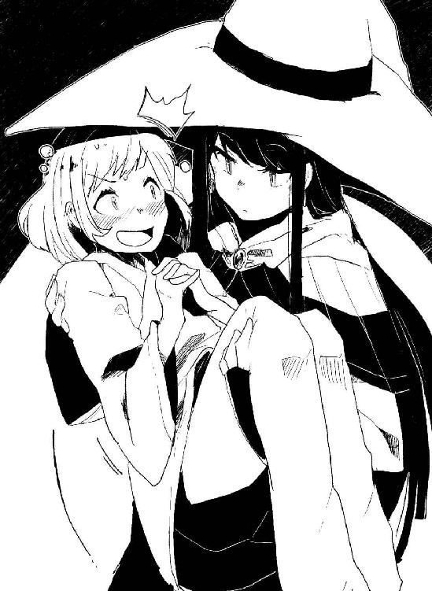
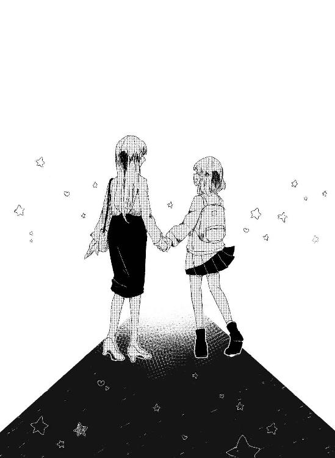

| 死んじゃうぐらい泣いていっぱい幸せになる百合 (みかみてれん文庫) | |
| みかみてれん | |
| みかみてれん (2018) | |
| Tags: | 百合 |
死んじゃうくらい泣いて
いっぱい幸せになる百合
作 みかみ てれん
画 風知草
そこは清浄な空気が流れる、真っ白な空間だ。
個室病棟。時が止まったようなその世界に、ひとりの少女がいた。
陽に当たらないで育った茶色がかった髪は、肩にかかるぐらいの長さで切り揃えられている。手足は細く儚げで、それはまるで日陰に咲くユリの花のようだ。可憐だが誰にも見られることはなく、ひっそりと佇む。そんな少女だった。
「......？」
消灯後の夜更け。ライトスタンドの薄明かりで本を読んでいたパジャマ姿の少女は、顔を上げる。
カーテンが揺れていた。
夜風が入り込んできて、少女の頬を風が撫でる。体に障ると閉めっぱなしにされていたはずの窓が開いていた。しかしその風は不思議なほどに柔らかく、優しかった。
「誰か、いるんですか？」
こんな時間に人がいるはずもない。けれど、気配を感じて少女は声をかけた。ベッドから降りてスリッパを履き、窓辺に近づいてゆく。
カーテンをめくる。誰もいない。当たり前だ。
読んでいた本に少し脅かすような描写があったから、気にしてしまったのかもしれない。もう十三歳になるというのに、子どもみたいな気持ちがまだ抜け切れないのだ。
嘆息とともに振り返る。
ベッドにひとりの女の子が座っていた。
「こんばんは！」
「......っ」
あまりにも驚いて言葉を失う。それでも相手を観察する余裕があったのは、自分とそう変わらない年の女の子がニコニコしていたからだ。そこにいたのが大人だったら、悲鳴をあげていただろう。
ただ、彼女はずいぶんと変わった格好をしている。
今夜は、ハロウィンだっただろうか。大きなトンガリ帽子に、全身をすっぽりと覆う闇色の外套を身に着けていた。
袖や裾から覗く肌は月明かりように白い。けれども弱々しい雰囲気はまるでなく、夜中にお家を抜け出してひとりの時間を楽しむ妖精のようだった。
「あの」
「んー？」
まるで知己にそうするように、彼女は首をかしげる。その自然な態度に、間違っているのは自分の方なんだろうか、と少女は不安になった。
「あの、新しく入院した人？」
「んーん、違いますよー？」
そうだろう。この病棟に入る人はみんな病人で、どこか雲がかかったようなぼんやりとした顔をしている。かたや目の前の彼女の表情は快晴だ。
「じゃあ......誰かのお見舞い？」
もう面会時間はとっくに過ぎているはずだけれど。
「お見舞いといえば、お見舞いですかね？ でも、あたしの場合はちょっと意味が違うんですよ。ほら」
彼女はベッドに座りながら、それを見せつけてきた。おとぎ話の中でしか見たことのないような、巨大な鎌。先端は月光を反射して鋭く光っている。ハサミ以外の刃物をこんなに近くで見るのは初めてだから、ちょっとこわい。
しかし、まさか本物ではないだろうと思っていると、彼女は自らを指しながら。
「逢いに来たんですよ、あたし。死神ですから」
無垢で無邪気な可愛らしい顔で、彼女はそんなことを言った。
さすがに、どう反応するのが正解なのかわからなかった。笑えばいいのか、驚けばいいのか。どちらも違う気がする。
「えっと......あなた、死神なの？」
結局、大真面目に問う。
「そうですよ、藤枝紗夜さん。見ての通りです！」
自慢げに――こういうのをドヤ顔、と言うのだろう――両手を広げた彼女は胸に手を当てて。
「いやあ、紗夜さんの死期が急に近づいてきて、その魂を刈り取るのが誰になるかって、ドキドキだったんですけど、なんとか当番をもぎ取ったんですよ。というわけで、あたしが紗夜さんの担当なので、きょうからよろしくお願いしますね！」
元気よく手を差し出してきた彼女。その手を反射的に取ると、思わず声が漏れた。
「ひゃっ......つ、冷たい」
手放す。まるで血が通っていないような体温であった。
「あ、ごめんなさい。でも、ほら、あたし死神なんで」
恐る恐る、今度は反対側の手を触る。やはり冷たさは変わらない。
「そんなの、いるはずないよ。でも......本当に、死神なの？」
「えへへ、紗夜さんならやっぱり信じてくれますよね。他にもいろんなことができちゃいますけど」
ニッコリと笑った死神は鎌を手に持った。彼女がそれを構えると鎌の先端に紫色の炎がともる。
「えいやあ、とう」
狭い室内で振り回せるほどのスペースがあるはずもないので、鎌の刃を花瓶に挿してある枯れかけた花にちょこんと当てる。次の瞬間、ジュッというちり紙が燃えるような音を立てて、花は萎んでいった。後には枯れ葉色の茎だけが残される。
ゾッとした。紗夜は思わず首元を押さえる。
生者の命を狩る恐ろしい存在。死神。その言葉が実感をもって襲いかかる。
だが反面、胸のうちには奇妙な落ち着きがあった。
「......そっか」
わたしに迎えに来たと彼女は言った。
それはつまり、そういうことなのだろう。
「わかったよ」
紗夜は読んでいた本からスッと栞を抜いた。面白いミステリー小説だったけれど、もう犯人の名前を知ることもできない。それだけはちょっと残念だった。
ベッドサイドに座り、お別れするように目を閉じる。
十三年の人生は、決して長いとは言えなかっただろうけれど、でも、いつかはこうなるのだという予感はあった。それが早まっただけのことだ。
「......死神さん、できれば痛くしないでほしいな。わたし、もうすぐお姉さんになるんだから、もういろんなことは我慢できるけれど......でも、痛いのだけはまだまだ苦手なの」
「え？ 痛いことなんてしませんよ⁉」
死神は目を丸くして、両手を振る。その姿がなんだか可愛らしくて、紗夜は迎えに来てくれたのが怖い人じゃなくてよかったな、と思う。
「えっと、どうすればいいかな？ ベッドに横になっていたほうがいいかな。それとも、立っていたほうがいい？」
「え、なにがですか？ あっ、違いますよ！ 違いますって！」
「？」
死神はそうとわかるほどに顔を赤くして、紗夜の両手を掴んできた。ひんやりとした彼女の手に体温が奪われる。けれどそこに、今までは気づかなかった女の子の柔らかな感触を感じた。
真正面に立つ彼女が顔を覗き込んでくる。血の赤とは全く違う、優しい赤い瞳に見つめられて、胸の鼓動が高鳴った。
「あの......」
「あ！ ごめんなさい！」
「ううん」
手を離して距離を取った彼女に、紗夜は首を振る。
「なんだか、ドキドキしちゃった。わたしね、同じくらいの年の子とあんまり話したことないから。それでね、死神さんの目、きれいだなって思っちゃって」
「あう」
彼女はさらに顔を赤らめて、小声でつぶやく。
「そういうところですよ、紗夜さん......」
「え、なにが？」
「とにかく誤解があります！ 死期が近づいてきたって言いましたけど、あたしは今すぐ紗夜さんの命を奪いに来たわけじゃないんですよ！」
紗夜はまばたきを繰り返す。
「......そうなの？」
「はい。むしろあたしは、紗夜さんのことを幸せにしようと思って、やってきたんです！ ですから」
死神は他意のない笑顔で言い放った。
「この死神、エミリーに万事お任せください！」
◇ ◆ ◇ ◆ ◇
いつものように目覚めた紗夜は、しばらくの間、ぼうっと窓の外を眺めていた。
小鳥のさえずりが聞こえてくる。なにも変わらない、なんの変哲もない朝だ。定刻どおりにドアが開いて、看護師が朝の診察にやってくる。なにも変わらない日々。
だが、若い看護師はカーテンを畳みながら。
「あら......紗夜ちゃん、窓開けた？」
「......え？ いえ、開けていません」
「そう？ おかしいわね、カギが外れてるわ。あら、花も枯れちゃってるわね。新しいのに取り替えなくっちゃ」
「......」
たぶん、昨夜のことは夢だったのだろう。
看護師は窓にカギをかけ直したあとで、首をひねりながら花瓶を持って部屋を出ていった。
ぱたん。これで病室は世界と隔絶された。
部屋の中央にあるベッドと、紗夜のわずかな私物。それが紗夜を取り巻くすべてだっった。
物心ついたときから、他の場所より病室にいる時間のほうが長かった。もっと小さな頃は、病院が自分の家だと思っていたくらいだ。
病名は覚えていない。けれど、長くは生きられない病気だ。一昨年にもって一年だと看護師さんたちが話していたことをこっそり聞いてしまって、しばらくは怖くて眠れなかった。死んだらどうなってしまうのかと、今は考えないようにしている。どうせすぐにわかるだろうから。
紗夜は栞の外れた小説を手に取り、ページをめくる。秒針の進む音だけが響く部屋で、紗夜の目はうまく文字を追いかけることができなかった。
皆が寝静まった時間に現れた少女。冷え切った体と、胸の中が暖かくなるような笑顔。とても可愛らしい少女だった。
「エミリー......」
小さく名前を呼んで、恥ずかしくなった紗夜は本で顔を隠した。
夢で会った友達の名前を呼んでしまうなんて、まるで幼児だ。
「わたしは、もうお姉さんなのに」
本に目を落とす。ひとりの時間を、ちゃんとひとりで消化することができる。それが大人と子供の境だと、紗夜は思う。
誰にも迷惑をかけず、自分ひとりで自分の人生を完結することができれば、それはきっと大人であるということの証明になるはずだ。
病室の紗夜は、黙したまま静かにページをめくる。それを寂しいと思うこと気持ちすら、少女にはもはやなかった。
そして、その夜。
なにかを期待していて待っていたわけじゃないけれど、紗夜がなんとなく夜更かしをして本を読んでいた頃。
カーテンがふわりと膨れ上がる。
紗夜がドキッとして身を起こすと、カーテンの後ろからひとりの少女が真昼のような笑顔で姿を現した。
「こんばんは！」
「......嘘、エミリー？」
口元に手を当てる。死神は鎌を壁に立てかけると両手を広げた。
「はーい、エミリーですよー。紗夜さん、名前を覚えててくれたんですね。嬉しいです」
手を前に出すと、それを彼女はギュッと握ってくれた。目が覚めるほどに冷たい。ああ、同じだ。
ただそれだけのことに。
なぜだか、涙がこぼれ落ちた。
「え！ 紗夜さん⁉」
動揺するエミリーに、紗夜は首を振りながら謝った。
「ごめんね、エミリー......。わたし、あなたのことを夢だと思ってて......。せっかく、あなたに会えたのに、信じられなくて......」
「いやいやそんな！ そんなこと言うんだったら突然押しかけたあたしのせいですし！ ああっ、紗夜さん泣かないでくださいよう。あうあう」
エミリーはどうすればいいのかわからないといった顔で紗夜の周りをうろちょろする。なんて人懐っこい死神だろうか。
紗夜は泣いてはいたものの、彼女を安心させたくてすぐに笑顔を見せた。
「あなたは本当にいるんだね、エミリー」
「そうですよう。でも、あたしの姿は普通の人には見えないので、実在証明はなかなか難しいんですけどー......」
エミリーは「そうだ！」と手を打った。
「だったら今夜は、それにしましょうよ。紗夜さんにあたしがホントにいるって信じてもらうために！」
言うやいなや、エミリーは紗夜の手首を掴んだ。
パジャマ姿の紗夜に自らの外套を着せる。外套の下のエミリーの格好は薄いキャミソールみたいなもので、その肌面積の多さに紗夜はドキッとした。
「え、なに、なに？」
「うふふ、外は寒いですからねー。さ、本持ってください。スリッパも履いて履いて」
「う、うん」
エミリーは強引に紗夜の手を引き、そして向かう先は――窓だ。
「あの」
どうするんだろうという紗夜の疑念は、しかしにっこりと笑うエミリーによって封殺された。これほど自信満々な笑顔を見るのは、初めてだった。
なにをするのかわからなくても、きっと彼女は自分を悪いようにはしないんだろうと思えた。密閉された空間でずっと人の悪意にさらされず生きてきた紗夜だからこそ、信じられたのかもしれない。
「さすがに死期はまだ遠いから、あたしの姿は見えないと思いますけど、でも、大丈夫です！ 死神のパワーを見せてあげますよ！」
ガラッと窓を開いたエミリーは、紗夜の手を引っ張る。後ろから持ち上げられたのかと思うほどに、いともたやすく体が浮かんで、そして――。
――エミリーはそのまま、病院の七階から飛び降りた。
「へ――」
叫びは声にならなかった。もし紗夜が心臓の病気だったら、ショック死していたのではないかというほどに衝撃的な展開。空を飛ぶ夢は何度も見たことがあるけれど、実際に落下するのは初めてだ。全身全霊でエミリーの体にしがみつく。
ぐんぐんと迫る地面に、辺りの光景がスローモーションに見えた。冷たい体のエミリーが紗夜の体を抱き返してくる。恐怖から逃れるため、その柔らかな圧迫感に気持ちを集中させた。エミリーが場違いな「やん」という嬉しそうな声をあげたのを聞いて、それどころじゃないよぉ！ と内心で叫ぶ。
怖い、怖い。痛いのは嫌だって言ったのに。どうしてこんなひどいことをするのエミリー。あなたはやっぱりわたしを殺すためにやってきた死神なの？
目を閉じて口も閉じてできれば耳も鼻も閉じたくて――。
――が、どんなに待っても、待っても、待っても、衝撃は訪れなかった。
「はい、つきましたよ、紗夜さん！」
「............え？」
エミリーの明るい合図で、恐る恐る目を開く。
そこには潰れた死体もなにもなく、というかむしろ自分たちは見慣れないマンションの廊下に立っていて。スリッパの下の感触は紛うことなく冷たいコンクリートで。
「ふぇ⁉」
「はいピンポーンっと！」
戸惑っている間に、エミリーがチャイムを鳴らす。面倒そうな女性の声がした。
『はいはい』
「すみません、喜久水先生のおうちですよね？ サインもらいに来ました！」
『は？』
ドタドタという音が聞こえてくる。ガチャリとドアが開くと、そこにはラフな格好をしたショートカットの女性が狐につままれたような顔をしていた。
目が合う。めちゃめちゃ気まずい。
「えっと......。君、なんでうちの住所知ってるの？ え、中学生？ 変わったカッコだね？ え、なんでパジャマ？ スリッパ？」
「え、えっと......」
矢継ぎ早に質問されても、なにひとつ紗夜には答えられない。困る。
「ほら、サイン、サインですよ！」と隣にいるエミリーが口元に手を当ててメガホンを作って言ってくる。その声を聞いた女性が「ん？ ん？」と辺りを見回す。どうやら本当にエミリーの姿は見えていないようだ。
「どうして、声は」
「紗夜さんの願いに関わることなら、ちゃんと聞こえるんですよ」
私、なにも願ってないのに......と思う、けれど。これ以上ここで考え込むのは無理だった。
「なになに、どゆこと......？」
眼の前の女性以上に頭の中がハテナマークでいっぱいになった紗夜は、もうわけもわからずに本を前に差し出した。
「さ！ サイン......ください......」
翌朝、目覚めた紗夜の枕元には、一冊の本があった。
まさかと思いつつも、恐る恐るその本を開く。表紙をめくったその内側に『喜久水』を崩したサインが描かれているのを見て、腰から力が抜けた。
「えええ～......？」
本物だ。
サインも、死神のエミリーも、本物なんだ。
興奮に、体がかぁっと熱くなる。こんなこと、きっと誰もしたことがない経験だ。
がらりとドアが開く。看護師が本を抱く紗夜を見て、あらあら、と微笑んだ。
「朝起きて、本を読んでいたの？ ダメよ、しっかり寝ないと。あら、きょうはずいぶんと顔が赤いわね。熱は......ないみたいだけど」
額に手を当てられる。そのしっとりとした温かさに、先日抱きついたエミリーの冷たい体を思い出してしまう。
しょうがない話だけど、あのときの自分はずいぶんとみっともなかった。きっと、恥ずかしい顔を見られた。
「また、顔が赤くなった」
「............」
恥ずかしい。看護師に指摘されたこともそうだけど、なにより同年代の子にあんな無様な姿を見られてしまったのが。昨夜のことは、どうか忘れてほしい。
そんな気持ちをごまかすように、紗夜は口を開く。
「あの......」
「紗夜ちゃん、どうかした？」
赤らんだ顔で問う。
「......死神って、見たこと、ありますか？」
彼女は顔をこわばらせた。
紗夜は遅れて気づく。自分みたいに死の淵にいる患者がそんなことを聞いてきたら、驚いてしまうだろう。失敗だ。
けれど看護師は考えて、すぐに首を振った。
「見たことは、ないわね。でも、そういう話は聞いたことがあるわ。昔、この病院に入院していた女性が死神を見たって」
「そっ......そうなんですか？」
思わず叫びそうになって、慌ててボリュームを落とした。大声を出すと咳き込んでしまうからだ。看護師は、ええ、とうなずいた。
「......その人、どうなったんですか？」
「えっと」
言いよどんだその姿から、紗夜は察してしまう。
「快方には向かっていたんだけど......」
きっと、入院していた人は死んだんだ。迎えに来た死神に魂を刈り取られて。
付け加えるように看護師は、言った。
「......ただ、幸せそうだったわ」
「............」
キュン......と胸が切なく鳴る。
その理由も、意味も、今の紗夜は知らなかった。
◇ ◆ ◇ ◆ ◇
「こんばんは！」
「......エミリー」
頬を膨らませて迎えると、エミリーは途端におろおろとうろたえだした。
「え！ どうしたんですか、紗夜さん！ お、お腹痛いんですか？」
「違うよ、昨日のこと。急に窓から飛び降りるなんて、すごく怖かったし......怖かったんだから」
恥ずかしかった、という言葉を飲み込み、ねっとり見つめる。すると、はわわわとエミリーは口を震わせた。
「あうあう。ごめんなさい、てっきりサプライズがあったほうが紗夜さんは喜んでくれるものだとばかり......」
素直に謝られると、紗夜は眉間から力を抜いた。もともと、怒ることにも慣れていないし、実際はただの照れ隠しだ。
「もう......。ああいうのは困っちゃうから、今度からあんまりしないでね」
「はーい！」
返事はいいのだ。返事は。
ただ、彼女が自分の下に現れた理由については、はっきりとさせておきたかった。
きっと言いづらいことだろうし。目を逸らしながら、問う。
「それで、エミリーはその......わたしの命を奪うために来たわけじゃないんだったら、なにをしに来たの？」
「あっ、それは死神の仕事にヘンケンをもっていますね！ 今時の死神は誰かを殺したりしないんですよ！ いやあたし新参者の死神なんで、昔の死神とか正直知らないんですけど」
「そうなの？」
「そうなんです」
エミリーは細い腰に手を当てて、大きくうなずいた。
「死神の役割とは！ それは死にそうな人が未練を残さずに死ねるように、そのやり残しをお手伝いすることなんです！」
その言葉をベッドに座って聞いた紗夜は、小首を傾げた。もちろん言っていることの意味はわかる。でも、全然ピンと来なかったのだ。
「やり残したこと......？」
「そうですよ。ほら、人間って死んでも死にきれないってよく言うじゃないですか。そういうときに未練がたっぷり残った人間ってなかなかあの世にいっても成仏しづらいんですよねー。だから、あたしたちみたいな役目があるわけです」
「成仏って仏教の言葉なのに、死神に関係あるの？」
「細かいこと気にしないでください紗夜さん。あたしにもよくわかりません。あたしたちはそういう風に定められているんで。ま、ま、それに紗夜さんはほら、まだ、十三歳じゃないですか」
隣に座ったエミリーが慎重に、こちらを窺うような上目遣いで聞いてくる。気を遣われているというのはわかる。わかるけれど......。
やり残したこと。
「別に、ない、かな......？」
「え！」
エミリーはこれまで話した中で、一番大きな声を出した。紗夜は思わずドキッとして胸を押さえる。
「遠慮してるんですか？ でも、なんでもいいんですよ！ どんなことでも叶えてあげる......とはさすがに、死神パワーも限界があるんで言えないですけど、大抵のことだったら叶えるために努力しますから」
あっ、そっかー、とエミリーは手を打つ。
「わかりました、わかりました。紗夜さんそれはつまり、恥ずかしがってるんですね？ 恥ずかしがり屋の紗夜さんのことですから、一目瞭然ですよ。でもいいんです、ほら、あたしって死神ですし、それがお役目なんですから。むしろ言ってもらったほうが助かりますーっていうか、言ってもらわないと困っちゃうのでドンドン言ってもらっていいんですよ。ね、ほら、ここぞとばかりにさらけ出しちゃいましょ。紗夜さんが自分をさらけ出して......ってちょっとなんか、オトナな響きですねっ。やんっ」
よく喋るなあ......と思ってその言葉を聞いていた紗夜は、まるで他人の話をされているような気分であった。
「......他の人って、そんなにやり残したことがあるの？」
「ええ、そりゃもうたくさんありますよね。数えきれないぐらいです。紗夜さんなんてまだ十三歳なんですから、もっともっとあるんじゃないですか？」
「えっと......」
考えてみる。でもやっぱり、すぐに思い浮かぶことはなかった。
「な、ないんですか、やりたいこと......？」
紗夜がもたもたしていると、エミリーは愕然とした。それがなんだか申し訳なかった。
「えっと......」
だから必死で考えてみる。
学校に通いたいというのはどうだろう。数えるほどしか行ったことはないけれど、同い年の子がいっぱいいた。毎日楽しいんだろうな、とは思う。
でも、もし体力のない自分が倒れて迷惑をかけたらどうしようと想像すると、気疲れしちゃいそうだ。
無理をしてまでやりたいなんて、思わない。
「だって、生まれてすぐ病院に入って、そこからずっと体が弱くて、なんにも自由なんてなかったんですよね？ それなのに......」
エミリーが言うことは、耳馴染み深い言葉だった。
よく言われる。周りの大人は紗夜を指して、可哀想だ、とよく言う。
そんなこと言われても──だって、仕方ないでしょう。
紗夜はそういう風に生まれてしまったのだから。
不自由な人生でも、紗夜はしっかりと受けとめて、自分なりに生きていくしかなかったんだから。
急にそんなことを言われても、困る。
「わたしは」
ぽつりと心情が溢れる。
「わたしの周りの人が、なるべくなら悲しまないで、わたしがいなくなった後も普通に生きていてくれたら、それがいいかな」
別に、拗ねて言っているわけじゃない。それは紗夜の本心だった。
「パパもママも、お医者さんにも看護師さんにも、いろんなものをもらってばっかりだから、返せないならせめて、遺したくないなって」
そう言うと、エミリーはひどく悲しそうだった。
「紗夜さん、心からそう思っているんですか......？」
念を押されて聞き返されても。
「うん」
紗夜の気持ちは揺るがなかった。
これでも十三年間生きてきて、ひとりの時間を大切に育んできたのだ。
紗夜は紗夜の人生を生きてきた。だから、『あの子は可哀想な子だった』なんて思ってほしくない。
でも、それは無理な話だ。紗夜の命は、自分を可哀想だと思ってくれているたくさんの大人たちのおかげで今も紡がれているのだから。
だから。
「わたしはね、朝になったら見えなくなる月みたいに、ここから消えちゃいたい。わたしが生きていたことをみんなが忘れてくれたら、それが一番いいの」
だって、みんなに悲しみだけを刻みつけたまま死んじゃうなんて、それこそなんのために生まれてきたかわからなくなっちゃうから。
周りの人をプラスにできないなら、せめてゼロでいたかった。
「って、ごめんね。これはやり残したことじゃないよね。ただのわたしの願望。変なこと言ってごめんね」
しょげるエミリーを見ると、胸がキュッと苦しくなった。
こんなに自分のために一生懸命になってくれるエミリーのために、自分もなにかしてあげたいのに、できない自分がもどかしくて。
迎えに来てくれた死神すらも悲しませてしまうのかと思うと、惨めさに居たたまれなくなってくる。
「紗夜さん......」
「......あ」
そこでふと置いてある本が目に入った。
先日の、ミステリー小説。これは誰にも言ってないけれど、自分が喜久水先生のファンなのは、ミステリーもさることながら、それと同じぐらいの熱量で語られるラブロマンスが好きだからだ。
ベタベタの恋愛モノを買ってもらうのは恥ずかしかったけれど、これはミステリー小説なので大丈夫。そんな言い訳に、自分で自分を納得させていた。
お話の中の恋はいつもキラキラと輝いていて、それはとても眩しくて自分と結びつくことなんて考えられなかったけど。
そうか、と気づく。
もし自分にやり残したことがあるとしたら。
「わたし、恋してみたいな」
「え！」
エミリーはぴょこんと身を起こした。カラカラのスポンジに水を注いだような身代わりの早さで、目を輝かせる。
「それって、あたしもお手伝いできることですね！」
彼女の笑顔はとても明るくて、可愛らしかった。
こんなに喜んでくれるなら、もっと適当ななにかを早く言えばよかったな、と思った。
「......お手伝いしてもらえる、のかな？」
「ええ！ 恋、恋ですかー。確かにそうですよね、思春期の女の子にはそれが一番気になりますよね！ 紗夜さんもやっぱり恋に恋するオトメだったってことですねー！」
あんまり連呼されると恥ずかしくなってくるのでやめてほしかった。エミリーはそういうところデリカシーがないと思う。
恨みがましく見つめるけど、彼女はこっちを見ずに自分の話を進めていた。
「さ！ じゃあどんなイケメンを見繕いましょうか？ 同い年ぐらいですか？ それとももうちょっと年上？ 社会人はダメですよ！ そういうのに憧れるお年頃なのはわかりますけど、犯罪になっちゃいますからね！」
「相手って、わたしが選ぶの？」
「そりゃそうですよー」
エミリーは嬉しそうにうなずいた。少し、考え込む。
「それはちょっと、やだなあ......」
「え！」
「知らない人と恋人になっても嬉しくないし......それに、その人は恋人を亡くしちゃうんでしょ？ そんなの、悲しいよ」
「あうあう」
またちゃぶ台をひっくり返されたように、エミリーは頭を抱えた。
「だったら、恋人が死んでもなんとも思わないような人を選んで......いやいや、ダメですよそんなの、そんな薄情な人に紗夜さんを任せるわけにはいきません......。いやでも、いいんですよ紗夜さん！ 他の人なんか気にしないで、紗夜さんだけの幸せを追い求めてくださいよ！」
肩に手を置かれる。ひんやりとして冷たいエミリーの手の感触に、紗夜は困った顔で微笑んだ。
「そういうわけにはいかないよ」
「知ってました......。紗夜さんはそういう人だって......」
別にエミリーを困らせたくて駄々をこねているわけじゃないのだ。紗夜は自分なんかのために、誰も悲しませたくないだけで。
......だから、もしエミリーが手伝ってくれるのなら。
「ねえ、こういうのはどうかな」
代わりに提案する。
「わたしがもう少しで死ぬって知ってて、それでも一緒にいてくれる人がもしいるのなら、その人に頼みたいなって......」
「そんな人がいたら、今すぐ言ってくださいよ......。あたしが連れてきますから......」
エミリーの手に、手のひらを重ねる。
顔を見られるのが恥ずかしかったから、そっぽを向きながら。
「......連れてこなくても、ここに、いるよ」
「え？ ........................え⁉」
その言葉の意味に気づいたとき、爆発するみたいにエミリーの顔が赤くなった。
「あ、あたし⁉ あたしですか⁉ え、なんであたしなんか！ あたし女子だし、死神ですよ⁉ 夜しか会えないし、触るとめっちゃ冷たいですよ⁉」
わたわたと慌てるエミリーの顔を上目遣いで見つめて、問う。
「......女の子同士は、ダメ？ やっぱり、ヘンかな」
エミリーは断固首を振った。
「――っ、だ、ダメじゃないですけど！ ぜんぜん、むしろめっちゃ嬉しいっていうか！ 最高の展開だったりしますけど！ でも、え⁉ そんな、いいんですか⁉」
「よかった」
紗夜は肺の空気をすべて吐き出すように、大きく息をついた。
「やだ、すっごくドキドキしちゃった」
熱くなった頬に手を当てて笑うと、エミリーが「やっばいです、かわいすぎです、尊みにあふれてます」とよくわからないことをつぶやく。
紗夜は誤解を融かすみたいに、エミリーの手を両手で握った。
「あのね、わたし、ぜんぜんなんにもわかんない初めての恋だから、またエミリーを困らせちゃうかもしれないけど......。でもエミリーはわたしのために、すごく真剣に悩んでくれてたから、そんな人、今までいなかったから......。ね、だから、わたしはエミリーがいいの」
胸に詰まってた栓が抜けて、ようやく言いたいことが言えた。
どうしてだろう。ずっとエミリーみたいな子と出会うのを、待っていたような気がした。灰色の世界に、たったひとりだけ色のついた少女のように。
すると今度は、想いを伝えたくて仕方なくなった。
「きょうも、怒ったフリをして出迎えてごめんね。ホントは照れ隠しだったの。恥ずかしいところを見られちゃったから......。エミリーの体、とっても柔らかくて、いい匂いがして......ずっと、思い出してドキドキしちゃってたの」
「ぎゃふ！」
「............ぎゃふ？」
「あ、いえ、すみません。ちょっと今、幸せの限界量を超えそうになって......いえ、大丈夫です、もう平気です。どんとこいです。あ、一回叫ばせてもらえます？ はー！ 幸せー！」
「？」
おかしな子だ。けど、そんなエミリーを愛しく思う。自分を『可哀想な子』じゃなくて、『藤枝紗夜』として付き合ってくれるエミリーを。
改めて、紗夜は彼女に問う。
まだ子どもだし、女の子同士だし、死神と人間だけど、でも......。
「ね、エミリー。わたしの恋人になってくれる？」
「はい喜んでー！ じゃなくて、こんな居酒屋みたいな掛け声じゃなくて、あ、あの......は、はい......」
消え入りそうな声でうなずくエミリーに、紗夜はくすっと笑った。
「ありがと、エミリー。短い間だけど、よろしくね」
「あうあう、あ、あたしの方こそ、不束者ですが......よろしくお願いします......」
白い指に、紗夜が指を絡める。くすぐったくて、こそばゆい。
恋をしようと決めて、なにかが変わるだなんて思っていなかったけれど、でもそれは間違いだった。
目の前にいる女の子が自分にとって特別な子で、彼女にとっても自分が特別な存在であると意識し始めると、胸中が愛しさで満たされてゆく想いがした。
恥ずかしさはまだなくならない。むしろどんどん大きくなっていく。
だけど、それよりもずっと大きな衝動が。相手に触れたいという情動が膨れ上がって止まらない。
「エミリー」
「え」
紗夜は仔猫のように、エミリーの白い頬に頬を擦り寄せる。冷たい感触が火照った顔に気持ちいい。エミリーの肌はどこに触れても柔らかかった。
「あうあう」
すっかり硬直したエミリーの頬に唇を触れさせ、そのまま這わせた。鼻の頭から、彼女の桜色の唇へと。触れ合わせる。
ただ肌と肌の一部分が接触しただけなのに、どうしてこんなに胸が苦しくて、息が止まりそうになるのか、わからなかった。
「さ、紗夜さん、ちょっと大胆じゃないですかー......？」
はぁ、はぁ、とエミリーは荒い息をつく。紗夜は申し訳なさそうに微笑んだ。
ちょっと強引かな、と思わないでもないのだけど、それはそれ。エミリーも了解してくれたんだから、ちょっとは我慢してほしい。
彼女が『めっちゃ嬉しい』って言ってくれたから、勇気をもらえたのだ。
「わたしね、恋人ができたらしたかったこと、いろいろあるの。できるわけないって最初から考えないようにはしていたんだけど、でも考えちゃってたの。......それ、全部していいんだよね？」
「ふぁ、ふぁい......お手柔らかに」
かわいらしい死神に、ごめんね、と心の中で謝る。
もう一度、唇にキスをして、その後頭部を撫でる。さらさらの髪からは夜の匂いがした。
この『好き』という気持ちが、普通の人の『好き』なのかどうかはわからない。
エミリーを特別に思う気持ちは初めてできた友達としてであって、その上で恋人という役割に彼女を当てはめているだけなのかもしれない。
けれど、だとしても、やめる気はなかった。
――だって、あと何晩エミリーに会えるかわからないのだから。
「ね、次はキスのときに舌を入れてみてもいい？ 大人のキスってそうするんだって」
「この耳年増ー！」
夜が明けるまで少女は、死神との初めての恋を耽溺していった。
◇ ◆ ◇ ◆ ◇
「最近、なにかいいことあった？」と看護師さんに聞かれて、紗夜はなんて言っていいのかわからず、ただ首を横に振った。
人に嘘をつくことに慣れていなかったから、ひとりになってずいぶんと落ち込んでしまった。自分は悪い子だ。
だからって言えるわけがない。『女の子の、しかも死神の恋人ができました』なんて。
「こんばんは！」
消灯時間を過ぎた夜中、恋人は決まって窓からやってくる。
ふわりと舞い降りてくる死神の少女を、紗夜はギュッと抱きしめた。
少女は一瞬「え！」と驚きに目を見張ったけれど、すぐにこちらの後頭部に手を当てて頭を撫でてくれた。
「なんですか、紗夜さんー。きょうは甘えん坊さんですねー」
「......うん、ごめんね」
気落ちした声に対して、エミリーは優しかった。
「いえいえ、いいんですよー。あたし紗夜さんに甘えられるのめっちゃ好きですから。もう好きすぎてやばいっていうか、紗夜さんに甘えられるために生きているっていうか。そんな勢いですから」
「エミリー」
余裕ぶってたエミリーの唇をさっと奪う。顔を真っ赤にして目を泳がせるそのリアクションがかわいくて、何度もキスをしてしまう。
するとエミリーはすぐいっぱいいっぱいになって、されるがまま。こちらに身を委ねてきた彼女の首筋にキスをして、そのまま胸元に顔をうずめる。
気持ちいい。体の奥に溜まった熱がとろけて、彼女とひとつになってゆくようだ。
体を触れ合わせるのは思ったよりもずっと簡単で、やり方なんて知らなくても、すぐに気持ちよくなれた。そうと決めたら、ただそれだけで。でも、きっと気持ちよくなれたのは、相手がエミリーだったからなのだろう。
長い間、黙って目をつむっていると、エミリーが痺れを切らしたように「もう！」と紗夜を引き剥がしてきた。
「あたしを恋人にするって、体が目的だったんですか⁉」
「え？」
「だって、ずっと病室でちゅっちゅ、ちゅっちゅしてばっかりじゃないですか！ 幸せですけど！ 最の高ですけど⁉」
だったらいいじゃないと思いつつも、紗夜は人差し指を下唇に当てて考え込む。
「エミリーはなにか、したいことあるの？」
「あたしは紗夜さんのやり残したことを叶えるためにやってきた死神ですから、あたしの要望とかは特にないですけど！ でもたまにはお外デートとか！」
仔犬のように紗夜の袖を引っ張ってくる。可愛らしい恋人の頭を撫でながら。
「エミリーがしたいなら、いいよ」
「それじゃダメです！ あたしは紗夜さんのやり残したことを叶えるために来たんですから！」
エミリーはけっこう面倒くさいところがある。そこもかわいいんだけど。
「......といっても、わたしは別にお外に行きたいわけじゃないし」
「え！ そうなんですか？」
こくりとうなずく。普通の恋人がしているような、例えば食事だとか、カラオケだとか、ショッピングだとか、そういうことにはまったく興味がなかった。
興味をもたないように自制していくうちに、本当にそうなってしまったのかもしれない。
「わたし、院内を散歩してても息を切らしちゃうから、きっとエミリーの迷惑になっちゃうよ。だから、えっと、行きたいならエミリーひとりでいって......」
言葉を途中で切る。エミリーが思いっきり悲しそうな顔をしていた。
「それから、どうするんですか......」
「......ひとりで遊んできたエミリーから報告を聞いて、わたしが楽しむ、とか」
実際、人が楽しいことをしたお話を聞くのは好きだった。みんな遠慮して、あんまり自分には話してくれないけれど。
「やですよー！ だってそんなの放置プレイじゃないですかー！ 高度すぎますよー！ 放し飼いじゃなくてちゃんと首輪つけててくださいよー！」
とうのワンコが乗り気じゃないなら、意味はない。
紗夜はベッドに座り、世界中の光景を思い浮かべる。
「だったら、どこか静かなところがいいな。わたしとエミリーしかいないようなところ。広くて、落ち着いている......。ねえ、夜の海とかどう？」
「いいですけど、冷たい海風は体に障るんじゃないですか」
「暖かい海にはいけないの？」
そう言うとエミリーはなるほどとうなずいて、紗夜の手を取った。
「では、思いっきりロマンチックな海にいきましょう」
嫌な予感がして、身を引いた。
「あ、待って。また窓から飛び降りるんでしょ......。ちょっと、心の準備が」
エミリーはまたあのときみたいに、紗夜の体を抱きしめてくれた。
「大丈夫ですよ、ほんの一瞬ですから。ちょっと目をつむってたらすぐです。怖くないです、怖くないですよー」
背中をぽんぽんと優しく叩かれる。
「う、うん......」
その言葉ではなく、エミリーに抱かれたことに安心して、紗夜は目を閉じた。ふわりと不思議な力で体が浮き上がる。
前と違って落下感は本当に一瞬で終わった。怖がる暇もなかったのは、きっとエミリーと抱き合っていたからだろう。気持ち良さが勝ってしまったのだと思えば、最近の自分はちょっとはしたないのでは......と反省してしまいそうになる。
が、すぐに『ざざ、ざざ......』という奇妙な音が聞こえてきた。目を開く。
世界が一変していた。
「わあ......」
思わず声を漏らす。紗夜の世界のすべてだったはずの病室はなく、辺りは三百六十度どこまでも広がる、あまりにも開け放たれた場所だった。
きらめく星がいっぱいに散りばめられた夜空が上半分。そして星を映して淡く輝きながら揺れる海原が下半分。
目がくらむほどになにもかもが小さく、遠い。
手が届くものだけに囲まれていた紗夜の箱庭は跡形もなく、空と海のとてつもなく巨大さに圧倒されて自分という存在がどこかに消えていってしまいそうな不安に胸が締め付けられた。
その手を握る小さな手。横には笑顔を浮かべているエミリー。確かなその手の冷たさに、いつしか息が詰まるような苦しさは吹き飛んでいた。
ここは桟橋で、先ほどから聞こえてくるのは波の音で、他にはなにもなく。
「......すごいね、エミリー」
万感の想いを口に出すと、隣のエミリーはえっへんと胸を張る。
「うふふ、そうでしょう、そうでしょう。どこだと思います？」
「えっと......わかんない。ハワイ、とか？」
星空を見上げてみたけれど、まともに日本の夜空を見たこともない紗夜にはわからなかった。でも別にここがどこでも、天国でも構わないと紗夜は思う。こんなに美しい景色を、エミリーと一緒に見れたことがなによりも嬉しかった。
「フランス領ポリネシアのソシエテ諸島にある島で、タヒチ島から約二百六十キロ離れたところにある、ボラボラ島っていうんですよ」
舌を噛みそうな名前をエミリーはそらんじた。そこはあまりにも遠すぎて、紗夜は心に地図を描くことすらできなかった。
「変な名前だね」
「ですよねー。教えてもらったとき、あたしもそう思いました」
ニコニコと笑うエミリーに、ほんの少し胸がちくりと痛んだ。反射的に聞いてしまう。
「エミリーは、誰かと来たことがあるの？」
「え！ あの、えと、それは、あの......」
慌てるエミリーもきっと嘘をつくのが苦手なのだろう。
急な不安が鎌首をもたげた。死神の彼女は、こうして今までもたくさんの人を看取ってきたんだろうか。
その中には......自分みたいに、彼女の恋人になった人もいたんだろうか。
詳しく聞くことはできなかった。どんな答えが返ってきても、たぶん、自分は気にしてしまうだろうから。
代わりに、エミリーの手を強く握り返す。
「やん。紗夜さんってば、積極的ですよ」
デレデレの顔で笑うエミリーのことを、自分はなにも知らないんだと、今さらになって思い知らされる。彼女が本当に自分と同じぐらいの年かどうかすら、わからないのだ。
「エミリー」
だが、それでもいいと思えたのは、きっと自分には立ち止まって考え込む時間すら、許されていないからだろう。
彼女は自分が『やり残したこと』を叶えるためにやってきてくれた死神で。
きっと、わずかな人生で幕を下ろすことになった自分を哀れんで、神様が送ってくれた宝くじみたいな幸運の使者だ。
人に不幸だ可哀想だと指差されるのはとっても苦手だったけれど、今だけはそれもいいかなと思えてしまう。
だって、エミリーに出会えたのだから。
「わたし、あなたのことが好きだよ、エミリー」
「っ......きゅ、急に来ますね、紗夜さん......。あ、あたしもー？ 好き、ですよー？」
ぎこちない口調のエミリーに抱きついて、その唇にキスをする。
目を閉じる。波の音と、暖かな潮風。桟橋から垂らした足を太平洋が優しく包み、そうしてこの手の中には恋人の柔らかな体がある。
唇から突き出した舌を、エミリーの口内に差し込む。
一瞬驚いたように動きを止めたエミリーだけど、すぐにその舌を丁寧に小さな舌で舐め包んでくれた。その粘膜も冷たくて、しばらく絡め合っていると伝わった熱でじんわりと人肌に温められてゆく。
まるでふたりの体が溶け合うようだと、紗夜は思う。
だから、このキスが好きだった。
息ができなくなり、あえぐようにして唇を離す。ふたりの間に唾液の橋がかかり、すぐに途切れたそれを追いかけるようにして、またキスをする。
いつの間にか、ふたりはもつれあって桟橋の上で横になっていた。
木の堅さも、気にならない。仰いだ星々のカーテンはあまりにも壮麗で、なんだか涙が出てきそうだ。すぐそばにある瞳の中にも星を見つけて、紗夜はエミリーの頬を撫でた。
「ありがとうね、エミリー。あなたのおかげで、わたしはとっても幸せだよ」
「まだ早いですよう、紗夜さん。まだまだ恋人としたいこと、たくさんあるんじゃないですかー」
お払い箱になるのは嫌だと唇を尖らせるエミリーに、紗夜は微笑む。
「うん、まだあるよ。でも、いいの。今は胸がいっぱいだから」
「それはよかったです。お役に立てたみたいで、あたしも嬉しいです」
にっこり笑うエミリーが愛しくて、けれど言葉で伝えるのがもどかしくて、紗夜は甘えるように口づけをした。頭を撫でられて、心地よさに目を細める。
「あの、この状態で言うのもなんなんですけど......」
「なぁに？」
上目遣いで問うと、エミリーは星明かりでもそうとわかるほどに顔を赤くして。
「ボラボラ島って、あの、あれなんです......。日本人には定番の旅行場所でして」
「ん」
なんとなく次の言葉がわかったけれど、でも、エミリーの唇から紡がれる声が聞きたくて、紗夜はその胸元を撫でながら待つ。
さすがに催促されているとわかったのか、エミリーは決死の覚悟で言い放った。
「......ハネムーンの、人気スポットなんですよー」
ふふっと笑みがあふれた。
「じゃあ」
あまりにも幸せすぎてこぼれかけた言葉を、紗夜はとっさに飲み込んだ。
いつかもう一度、ふたりで来れたらいいね。
そんな未来は二度と訪れないのだと、知っているから。
「エミリー」
「なんですかあ」
その体を抱いて、パノラマの夜景に誓うように。
「あなたのことが一番好きだよ、エミリー」
◇ ◆ ◇ ◆ ◇
紗夜のベッドテーブルには、海岸で拾った小さな貝殻が置いてあった。
「どうしてのこれ？」と看護師さんに聞かれたので、紗夜は微笑みながら「太平洋の島で拾ってきたの」と答える。
すると看護師さんも「それは大切にしなきゃね」と笑顔を浮かべてくれた。こんなに簡単なことだったんだ、と紗夜は改めて思う。
気持ちはすごく晴れやかだったのだけれど、その思いとは裏腹に、この日は咳に悩まされた。個人の運の総量なんてものを信じてはいないけれど、もしかしたら海風が体に障ったのかもしれないな、とは思った。
けれど原因を認めたらエミリーが自分にしてくれたことを裏切るような気がして、夜までに治そうと一日おとなしくしていたものの、やっぱり体調は紗夜の思い通りになってはくれなかった。
ずっと諦めていることなのに、どうしても悔しくなってしまう。
人も自分の体も自由にはならないのはわかっているのだから、せめて心だけはと、紗夜は泣かないように夜を待った。
「紗夜さん、つらそうですねー......」
結局、発作は夜になっても収まらなかった。
ベッドに横になった紗夜の額に、エミリーが手を置いてくれる。ひんやりとしたその感触が気持ちいい。
不思議だ。生きることは苦しいことばかりで、お医者さんも看護師さんも自分のためを思って痛いことをしてくれるのに。
命を奪うはずの死神が、自分の苦しみを和らげてくれるだなんて。
「エミリー」
咳の合間を縫って声をかけると、「はーい、なんですかー」と返事をしてくれた。
その眼差しには、大人たちのような同情も憐れみもなく、ただ優しくて。
死は万人に平等に与えられる、などというのは使い古された言葉だが、本当なのかも知れないと紗夜は思った。
「大好きだよ、エミリー」
「あ、あたしも、大好き、ですよ？ もちろん......」
たどたどしくそう言うエミリーに、あれ、と思う。自分のことを大好きでいてくれるのなら、それは平等ではないのでは？
その矛盾を考えようとしたけれど、思考する体力も残っていなくて、紗夜は苦しさの中で眠りに落ちていった。
◇ ◆ ◇ ◆ ◇
きょうはすごくお腹が痛くて、ずっと痛み止めの注射と点滴で一日を過ごしていた。
夜にエミリーが来たみたいだけど、紗夜は気づけなくて。
次の日も、その次の日も、紗夜は眠っていてエミリーに会えなかった。
死神は死期の近い人間の下に現れる。
わかっていたはずなのに、お腹が痛くて、そして、胸が苦しかった。
やり残したことなんて本当はなかったはずなのに。
なのに、エミリーと会ったから、やり残したことができちゃったんだ。
わたしのきれいな恋人、エミリー。
あなたが来るのを、わたしはずっとずっと待っていた気がするよ。
◇ ◆ ◇ ◆ ◇
「こんばんは！」
いつものように元気よく、彼女は姿を見せてくれた。
紗夜は喜久水の出した何冊目かの文庫本を閉じて、「おかえり」と告げる。するとエミリーは顔を赤らめ、たどたどしい口調で「た、ただいまですー......」と返してくれた。
「いやー、なんだか恥ずかしいですね！ あたしがただいまだなんて、まるで紗夜さんのいる場所があたしの帰るおうちみたいじゃないですかー」
たはー、とごまかすように笑って、エミリーは自分の額をポンと叩いた。照れ隠しというのは一目瞭然で、しかも隠せていない。
その邪気のない仕草に、ふふっと声をあげて笑う。
「エミリー、かわいい」
「え！ そ、そんな......それは紗夜さんのことですよー......。紗夜さん以上にかわいい生き物なんて、この地球にいるはずないんですからー」
「大げさだよ、エミリー。でも、嬉しい。わたしはエミリーにとって、一番なんだね」
「そりゃそうですよー。ぶっちぎりの一位、ナンバーワンです。それは紗夜さんが生まれる前からの決定事項なんですからー」
「なぁに、それ」
じゃれ合うようにして、お互いの気持ちを確認する作業はとても気持ちよくて、もうこれだけで紗夜は満ち足りた気持ちになる。
心から幸せだ。
その気持ちは、嘘じゃないのに。
「ねえ、エミリー」
おいでと両手を広げると、躾けられた仔犬みたいに懐に潜り込んでくる。首の裏を撫でると、くすぐったそうに身悶えした。
一緒のベッドに入って、耳にキスをする。まぶたにキスをして、髪にキスをする。エミリーの肩を撫でて、鎖骨から胸元へと唇を這わせる。
「あうあう、なんですかいきなり、紗夜さん......。過激ですよう」
「きょうはね、最後までするの」
「ええ、そうですか、最後まで......最後まで⁉」
紗夜はその細い体の上に覆いかぶさる。
心の準備ができていないエミリーを下にして、紗夜は自分の乾いた唇を舐めた。
髪を耳にかけながら、うん、とうなずいて。
「いいでしょ？ エミリー。だってわたしたち、恋人同士なんだから」
「そうですけどう......」
背徳感に苛まれながら、エミリーの頬を撫でる。
エミリーは何度も意味のないつぶやきを漏らす。小さく体を震わせている彼女の体温の低さが、まるで自分を拒絶しているようだ。そう思うのは、後ろめたいことをやろうとしているからかもしれない。
本には書いてあるけれど、まさか自分が誰かとすることになるとは思わなかった。それも、女の子相手に。
緊張して、指がうまく動かない。でも、心の奥には仄暗い高揚感がわだかまっていた。
夜の病室で少女に覆いかぶさり、自分がこれからやろうとしていることの意味を考えると、罪の味が口いっぱいに広がってしまう。
エミリーは期待と不安がないまぜになった目で、こちらを見上げてる。彼女の無垢な紅い瞳に、心の中まで見透かされそうになって。
「......わたし、ヘンなのかな」
本音が漏れる。
「エミリーのこと好きなのに、好きって気持ちだけじゃ収まらなくて......。もっとエミリーに触れたいの。わたし、いやらしいことばっかり考えてるの」
すん、すん、紗夜は鼻をすする。
こんなことを告白したら、エミリーに愛想を尽かされてしまう。だけど、黙って強引に体を重ね合わせるのは、とても卑怯な気がしたのだ。
紗夜の気持ちを聞いて、エミリーは。
「ヘンじゃないですよ」
紗夜の下で仰向けに寝そべりながら、そう言って微笑んでくれた。
「......そう、なの？」
「はい。好きな人とそういうことをしたいって思うのは、人間なら当然の感情です。紗夜さんはなんにもおかしくないですよ。っていうか、人間じゃなくたって......」
そこでヘタれてしまうのがエミリーのかわいいところだった。目をそらす彼女の頬に手を当てて、こちらを向かせる。エミリーは顔を真っ赤にしていた。
「エミリーも、わたしに触れたい？」
「......あうー」
許してほしいと目で訴えてくる死神の少女だが、紗夜は逃すつもりはなかった。
それはきっと、自分にとってすごく大切なことだから。
「ねえ、エミリー」
少女は観念して、こくん、とうなずいた。
「はい......。あたしも、紗夜さんと、いやらしいこと、したいですよう......。あたしはもともと、そんなことばっかり考えてましたし......」
どんな恋がきれいで、どんな恋が邪なものか、紗夜にはわからないけれど。
でも、とても恥ずかしそうにそう告白するエミリーは、自分が今まで見てきたどんなものよりも綺麗に思えた。
ボラボラ島の見渡す限りに広がる景色だって、エミリーの照れ顔には敵わない。
「嬉しい」
紗夜はエミリーに抱きついた。
「わたし、エミリーに触れてほしい」
「え！ え......あ、あたしがする側ですか......⁉ どちらかというとタチみが強いのは紗夜さんのほうじゃ......」
なんだか慌て出す彼女の言葉は、よくわからなかったものの。
「誰にも覚えてほしくないって、思ってたの。だって、短い時間を精一杯、健気に生きていた女の子......そんな風に後から言われるなんて、絶対やだ。わたしはわたしなの。不幸で可哀想な女の子じゃないの」
「紗夜さん......」
「だからね、エミリーにだけは、覚えていてほしいの。わたしのことを。わたしの声も、匂いも、感触も、味も......わたしを、ぜんぶ」
体重を預けると、エミリーも自分のことを抱きしめてくれた。
「はい、覚えてますよ。ずっと、覚えてます。一日も、忘れたことなんてないです。本当です。......今の紗夜さんは、あたしの恋人ですから」
「......うん」
泣いちゃいそうな顔で、紗夜は笑った。
「ありがとう、エミリー。あなたが覚えていてくれるなら、わたしはきっと、もう大丈夫」
この世界でたったひとり、本当の自分を知ってくれている人がいるなら、自分はただの『可哀想な女の子』じゃなくなるから。
「わたしの、愛してるって証、受け取って......エミリー」
「はい、紗夜さん」
今さら証明する必要なんてないかもしれなかったけれど、でも、紗夜は全部を上げたかった。
パジャマを脱ぐと、まだ膨らんですらいない平坦な胸があらわになる。さすがに恥ずかしくて、紗夜は手で隠しながらエミリーを見つめる。
「......見ても、笑わないでね？ わたし、まだまだ子どもだから......」
「紗夜さんの胸ってだけでやばすぎなので大丈夫です」
がちがちに緊張したエミリーの言葉に、紗夜は勇気を出してそっと手をどける。なにもかも覚えてもらおうって決めたんだから。
「紗夜さん、きれいですよ」
「......やだ、エミリーのも見せて」
あうあうとうろたえるエミリーの外套を脱がし、その中のキャミソールをめくりあげる。スポーツブラを上にずらすと、紗夜のものより少し大きな膨らみが見えた。エミリーは顔を両手で覆っている。
「紗夜さん、積極的ですよう」
「エミリー、かわいい」
「やっ、ちょっ」
手のひらで触れると、水枕のような弾力が返ってきた。びくびくと体をはねさせるエミリーがかわいい。愛おしい。両手で包み込むように揉みしだく。
「紗夜さぁん......」
鼻にかかった声をあげるエミリーは、けれど嫌がっている様子はなくて。紗夜はしばらく死神の少女の胸をいじってから、唇を近づけた。その先端に優しいキスをする。
「ひゃあぁ......」
「エミリー、好き」
「あ、あたしも、大好き、ですよう......」
夢を、見てしまう。
もしも彼女と同じ時を生きられたら。
こんな毎日が、明日も明後日も、その先もずっとずっと続いていたら。
それはどんなに幸せなことだろう。
夢を見てしまう。
同じ制服に身を包み、どこかで待ち合わせて、一緒に学校に行くのだ。退屈な授業だって、彼女と一緒ならきっと楽しいだろう。
お昼は陽だまりのベンチに小さなお弁当を持ち寄ろう。ごはんの後は陽気に誘われて、目覚めれば彼女が自分を膝枕してくれている。
放課後はあてもなく町をブラブラして、手を繋ぎながら気ままに過ごそう。
世界中ではたくさんの人が、そんな毎日を、なんの疑問もなく謳歌している。
紗夜には絶対に手に入らない日々を。
どうして。
どうして、わたしだけ。
――ダメだ。そんなことを思っちゃ、いけない。
自分の力でどうにもならないことを願うのは、意味がない。無駄だ。どうせどうにかなるはずがないんだから。
「紗夜、さぁん......」
切なげな、熱い吐息。
紗夜の腕の中で、エミリーは甘く喘ぐ。
胸の中が愛でいっぱいになればなるほど、代わりにどこかがスカスカの空洞になってゆく。
ぜんぶ、ぜんぶ、エミリーのせいだ。
どうにもならないはずのことが、どうにかなってしまったから。
わたしは、知ってしまったから。
奇跡の味を。その、あまりにも甘美な口触りを。
だから、次から次へとくだらない妄想がこみ上げてしまうのだ。
必死にフタしていたなにかが、溢れ出してしまうのだ。
エミリーが愛しくて、愛しくて、だからこそ憎い。
自分に喜びを与えてくれた彼女が、誰よりも大切だった。
少女たちの拙い情事は、朝告げ鳥ではなく、紗夜の咳とともに終わりを告げた。
ぱたんと横になり、紗夜は汗で張りついた自分の前髪を指でかき分ける。
「ごめんね、エミリー。ちょっと、疲れちゃった」
「ううん......とっても、幸せでしたよう」
「わたしも」
鼻と鼻が触れ合うほどの距離で並んで横になり、ふたりはふふふと笑う。
どちらも一糸まとわぬ裸身で、指だけではなく、その白い脚も絡めていた。まるで片時も離れたくないとばかりに。
「ねえ、エミリー。人は死んだら、どうなるのかな」
「え......いや、すみません、あたしにもちょっとわからないです。死神とか言っておいて、死後には一切関わりがないもので......」
「そっかあ」
別に本気で聞きたかったわけじゃない。毎年、日本人だけで百万人以上が亡くなっているのだ。死後の世界なんて、紗夜は信じていなかった。
「これで、わたしのしたかったことは、だいたい全部終わったかな」
「......本当ですか？」
「うん」
エミリーは眉根を寄せていた。
「でも、人間の未練はなくならないって聞いてますよ。やりたいことが次から次にあふれて出てきて、結局死ぬその日まで間に合わないんだって。紗夜さんだってまだまだあるんじゃないですか。別に、どこかでおしまいなんて言わなくても、あたしは」
「いいの。わたしは」
紗夜は微笑む。
「ひとつだけ、残っているんだけど......それはきょう、片付くから」
「きょう......？ これからですか？」
素直に問いかけてくるエミリーの頭を撫でる。
魂の抜けたような声だった。
「エミリー。恋の始まりがあるとしたら、恋ってどこで終わるのかな」
「え、それは......」
エミリーは少し考えて。
「どちらかが死んじゃったりしたら......とかですか？」
「ううん。それでも恋はなくならないよ。いなくなった人を、いつまでも想い続ける恋って、あると思うから」
「だったら、なんでしょうか」
紗夜は唇を噛む。お腹に力を込めて、ちゃんとエミリーを見た。
「恋に、お別れを言ったときだよ」
「お別れを......え？」
エミリーが思わず身を起こす。これ以上、言葉を続けられないように、エミリーは紗夜を止めるつもりだったのかもしれない。だが、死神にそんな権利はない。生者の願いを叶えるのが、エミリーの仕事なのだから。
くしゃっと顔を歪ませるエミリーを見つめながら、紗夜は無理して笑顔を作った。
「エミリー。わたし、最後にしたいことがあるの。お願い」
「紗夜さん」
紗夜は告げた。
「わたしの失恋を、お手伝いして。ねえ、エミリー」
◇ ◆ ◇ ◆ ◇
紗夜は恋がしたかった。
甘くて、とても幸せな恋だった。
だから、きっと切なくて、身を切られるような失恋になるだろう。
今までに味わったことのない痛みだ。
枯れるまで、泣いちゃうだろう。
でも、恋がしたかったから。
誰もが経験して、乗り越えて、大人になっていくその断片に触れてみたかった。
それはやっぱり予想通りに、予想以上に苦しくて、つらくて。
けれどたぶん。
失恋を知ることができて──恋を完結させられて、自分は幸せなんだと紗夜は思った。
◇ ◆ ◇ ◆ ◇
エミリーに別れを告げてから、急に咳の出る日々が続いた。
体はあんまり動かなくなってきて、病室はＩＣＵに移された。
ここだと窓がないから、エミリーが入ってこれないのかなあ、と紗夜は思う。
お別れを告げたときのエミリーは泣いたりしないでちゃんと、わかりました、って言ってくれた。それはちょっと意外だったけど、たぶん彼女は今までにいろんな人ともっと多くのお別れを経験してきたんだろうな、って感じた。
別れても、エミリーは大切なお友達だ。そのことに変わりはない。
でも、あの日以来、エミリーとは会えないでいる。
会えたら、なにか未練がましいことを言っちゃうのかもしれなくて怖かったけど、でも、会いたかった。
わたしのワガママに付き合わせちゃってごめんね、って謝りたかった。
パパとママがお見舞いに来る日が多くなってきた。
昼間はずっと意識がぼんやりしているからよく覚えていないけれど、ふたりともすごく悲しそうな顔をしている。
わたしを見る、大人の目だ。
紗夜ちゃんは可哀想な子。長く生きられなくて、悲惨で、哀れな子。
そうかも。だって、とっても大事な恋を失ってしまったんだから。すごく悲しいよ。
でも、この痛みがあるから、わたしはちゃんと生きていたんだって言い張れる。誰かに押しつけられる痛みじゃない。わたしが選んだ痛み。わたしを強くしてくれる痛み。
気持ちいいだけの恋を手放していなかったら、きっとわたしは今頃、死にたくないって泣き喚いていただろう。
パパやママにすがりついて、お医者さんや看護師さんにいっぱい迷惑をかけて。
喚いたところでよくなるわけもなくて、死を恨んだだろう。
やり残したことは次々と増えて、ワガママばかり言っただろう。
エミリーに逢いたくて、泣きべそをかいて、すっごくみっともない。
でも、もう平気。
だってちゃんと、わたしはわたしの恋を終わらせられたから。
この人生だって、終わらせることができるよ。
ねえ、エミリー。
「こんばんは」
その夜、わたしは夢を見た。
枕元に、エミリーが立っていた。
その両手はあの大きな鎌を握っている。久々に見た鎌だ。
「紗夜さん。今夜はとても月がきれいなんですよ」
窓のない部屋からは、月も見えない。
「......お別れを言うまでは、まだ時間がありますから、少し、お話をしてもいいですか？」
エミリーはわたしの近くに座った。
お話。
人工呼吸器の取りつけられたわたしには、返事ができない。
エミリーはわたしの頬を指で撫でる。
「紗夜さんのこと、大好きでした」
わたしも。
今でも、好き。
大好き。
「紗夜さんと一緒にいた時間は、とっても幸せでした」
うん。
幸せだったよ。
「だけど、こんなのってないです。紗夜さんはまだ、十三歳なんですよ」
エミリーの頬を涙が伝う。
「紗夜さんはもっと、幸せな人生を生きなきゃだめなのに......。どうして、こんなに早く......。まだ、紗夜さんはなにもしていないのに......なんにも悪いことも、してないのに......。あたし、紗夜さんの命を奪いたくないです......」
手の甲で涙を拭うけれど。
エミリーの涙はぜんぜん、止まらない。
「ずっと、ずっと、泣かないようにしてたのに......紗夜さんが幸せに逝けるようにがんばろうって、そう自分に誓ったのに......でも、もうだめです。笑って看取るなんて、できません。いやです、紗夜さん。あたしを置いていかないでください」
そう言って泣きじゃくるエミリーは、死神らしくなくて。
まるで、普通の人間の女の子みたいで。
「紗夜さん、あたし、紗夜さんのことをいつまでも覚えているなんて、嫌ですよ。だって、この恋を終わらせることなんて、無理ですもん」
エミリーはみっともなく泣きべそをかいて。
「いなくなった人を、いつまでも想い続けちゃいます。ぜったい、そうです。無理です。紗夜さんのこと、大好きなんですから」
紗夜は薄く目を開いて、エミリーを見る。
死んでほしくないって言って泣くエミリーはとっても無様で、可哀想で、こっちがつらくなるほど弱くて。
なのに。
どうしてこんなに、きれいなんだろう。
ああ......。
わたしも、生きたかった。
生きたかったなあ。

「あああああああああああ......」
病室にひとり、意味のないうめき声が流れた。ゾンビじゃない。個室病棟に入院している女性の声だ。
赤い髪を肩のところで切り揃えたその女性。線の細い容姿は整っているが、尖った瞳には世界を恨むような濁りが渦巻いている。
彼女は二十歳の半ばを過ぎた頃で、さらに言えば、人生のドン底に叩き落とされていた。
「あたしがなにをしたんですかー、いったいー......」
その境遇はだいぶヘヴィだ。なんといっても一番の不幸は半身不随である。本当に下半身がぴくりとも動かないのだ。まったくもって笑えない。
自動車を運転中の事故だった。横合いから飛び出してきた車にぶつけられて、そのまま。背中を打ちつけた彼女は病院に運ばれて、今に至る。
保険金はがっぽり入ってきたので入院費の心配はないのが不幸中の幸いか。いや幸いもなにもねえよ、と首を振る。
仕事も失った彼女には、しかしプライベートのパートナーがいた。同性の恋人は半身不随になった彼女を見て、深く落ち込んだ。そして、こう言った。
『ごめんなさい』
そう、別れの言葉である。
自分が弱いからだとか、あなたの人生にこれから付き合えないとか、すべて悪いのは自分だとか、そんな自分を守るための言葉を並べ立てておいおい泣くので、おいおい泣きたいのはこっちだぞ、と叫びたかった。
くそう、顔がいいからって大学時代に手を出してそのまま付き合った彼女だったが、こんな人間だとは知らなかった。やっぱり人の本性は土壇場にならないとわからないものだと気づいたのが、唯一の収穫だったかもしれない。代償重すぎる。
というわけで、下半身の感覚と仕事と恋人の三つを一度の事故で失った女性は、途方に暮れている。むしろ途方に暮れ飽きてきたぐらいである。
「はー......あたしの人生なんなんですか、マジー......」
夜中、消灯時間を過ぎて、看護師さんに頼んで借りてきてもらったレズセックスのＤＶＤを垂れ流しながら、女性は深いため息をつく。
イヤフォンから聞こえてくる嬌声も、心の受け入れ体制が整っていなければ、ただの雑音でしかない。端的に言って、虚無だった。
「窓から飛び降りでもしてやりましょうか......。足さえ動いたらなあ。リハビリがんばろっかなあ......」
「......飛び降りたいなら、手伝うけれど？」
部屋の中に、気配もなく、ひとりの女性が立っていた。
「え⁉」
気がつかなかった。あまりにも驚いたのでのけぞると、変な動きをした手がヘッドフォンジャックを外してしまう。
病室中に響き渡る女性の喘ぎ声。やばい。汗が吹き出る。
彼女は奇妙な格好をしていた。大きなとんがり帽子に、夜色の外套。それよりもなによりも、女性の目は彼女の顔面に吸い寄せられた。えっ、なに、めっちゃ綺麗。美人すぎるんですけど。顔面の作りがドストライクでやばい。
長い黒髪を真っ直ぐに伸ばしている。意思の強い切れ長の目は、夕焼けのように赤く鮮やかに輝いていて、グッと心を掴まれた。夕日を見るたびに彼女のことを思い出しそうだ。それほどに鮮烈な美貌だ。
スタイルの良さはモデルのようで、背筋を伸ばして立つその姿は病室の空気さえも凛と張り詰めたものへと変えてしまっている。
近寄りがたく、人を寄せ付けない雰囲気を纏う鋭利な刃物。そんな雰囲気をもつ彼女は、指先で。
「......それ」
「え？」
振り返る。いまだにテレビから女の喘ぎ声が。慌ててリモコンを操作。即消す。
たはー、と笑ってごまかすと、めちゃくちゃ深いため息をつかれた。
「柏崎絵美梨さん？」
「え！」
どうして自分の名前をこの人が知っているんだ。こんなに綺麗な人が。
「も、もしかして、どこかで会ったことあります？」
ドキドキしながら質問すると、彼女は腕組みをした。腕組みは拒絶の意思表示だとかなんだとか聞いたことがある。たぶんニセ科学だろう。
「貴女、それより先に聞くことないの？」
もちろんある。
「今、付き合っている人とかいますか⁉」
「..................」
すっごい白い目で見られた。
「いるわけないわ。こんなに変わった人は初めて」
そうつぶやいた彼女は、絵美梨の下半身が動かなくなったときのお医者さんみたいに首を横に振った。
「このまま帰ってもいいんだけど......一応、規則だから言ってあげるわ。貴女、もうすぐ死ぬの」
「へ⁉」
美人から飛び出た迫力のある言葉に、絵美梨もさすがに驚いた。
「な、なんでですか......？」
「死因までは知らないわ。だから私が貴女の下にやってきたの」
そう言うやいなや、カーテンがはためいた。暴れて部屋の中になだれ込んできた風に顔を背ける。視線を戻すと、彼女はその両手にいつの間にか、巨大な鎌を握っていた。長大な、物語の中の骸骨が持っているような鎌だ。
「私は死神。貴女の魂を刈り取りに来たの」
巨大な月を背にそう宣言する彼女は、なるほど、死神を名乗るだけあってまさしく人知を超越した美しさであると言えた。
「えーと......」
口を開閉させ、絵美梨はとりあえず辺りを見やる。風は止んで、窓も閉まっていた。この短い間に、とても不思議なことがいくつも起きたようだった。頭がぜんぜんついていかない。
「......と、言いたいとこだけど」
死神が手のひらをくるりと回せば、鎌は消え去った。目を離したわけじゃないのに、まるで手品だ。
「今すぐに殺す、というわけにはいかないのよ。面倒なことにね。だから、貴女が飛び降りてくれたら手間が省けるんだけど？」
「つ、謹んでお断りいたします......」
そんなことしたら、このお姉さんと過ごす時間が失われてしまう。
「もうちょっと遅く来ればよかったわ。死神の役目はね、貴女の魂を刈り取ることじゃなくて、生者が未練なくあの世に旅立てるように、そのお手伝いをすることなの」
「そうなんですか？」
「ええ、決まりでね。貴女、やり残したことはある？ ありそうね、たくさん」
「......なんでもいいんですか？」
「ええ。大抵のことは叶えられるわ。最期だけはいい目を見せてあげようという神様の計らいでしょうね」
絵美梨の顔がぱぁっと輝いた。
なんてことだ。不運しかないと思っていた自分の人生が、ここで逆転ホームランだ。いや、死期が近いんだからプラマイゼロか？ まあなんでもいいや。
「だったらあたし、やりたいこといっぱいあるんですよ！ うふふ、うふふ、なににしよっかなあ、夢が広がるなあ......！」
美味しいものも食べたいし、いろんなところに行ってみたい。可愛い子ともたくさん付き合いたいし、賑やかな遊びだって大好きだ。
指折り数える絵美梨に対して。
「けど」
死神は椅子を引いて、絵美梨から離れた病室の隅に腰を下ろした。
「私、そういうのやってないから。ごめんね」
「えーーーー⁉」
大声に顔をしかめる死神は、苛立たしげに足を組む。白い腿が見えて、あっ、み、見え......見えない！
「なんでですか！ パンツ見せてくださいよ！」
「なんなの本当に貴女......。だって、生者の願いなんてキリがないじゃない。ひとつ叶えたらまた次のひとつ。付き合っていられないわ」
「えー......」
それで会話は終わったとばかりに死神は腕を組んで横を向いた。ひどい。
「じゃあ、なにしに来たんですか......？」
「貴女が死ぬのを待ってるのよ」
「ほんとひどい」
うめく。死神は帰るつもりはないどころか、絵美梨のベッドテーブルにあった本をむんずと掴んで持ってった。
「貴女、本も読むのね」
「いや、あたしは読まないんですけど、家族が持ってきてくれて」
喜久水だかいう作家の本だ。死神は椅子に戻ってぺらぺらとめくる。壁の花というには贅沢すぎるほどの美人っぷりは、眺めているだけで目の保養だった。
けれど、どちらかというと絵美梨は、眺めることしかできない花よりも、触れられて言葉を交わすことができる生身の女性の方が好きだった。
「あのー」
「なぁに」
言外にうるさいわねというニュアンスを含んだ言葉に傷つきながらも。
「お姉さん、せめてお名前を教えてくださいよう」
面倒くさそうに彼女は顔を上げた。それから本を借りていることを思い出したのか、渋々といった態度で。瞳とは違う苺のような紅い唇を開いた。
「フィウ」
「え？」
「聞こえなかったの？ フィウって言ったの」
「フィウさんですね！ 一生覚えておきます！」
勢いよくそう答えると、途端にフィウは顔を歪めた。
「......一生？」
「え？ あ......。そういえば、あたしもうすぐ死ぬんでしたっけ」
あまりにも実感がなくて忘れてしまっていた。フィウの言葉を素直に信じたわけではないが、絵美梨はうなずきながら。
「でも、うん。短いかもしれませんけど、一生ですよ。フィウさん。ずっとお名前を覚えてます。こんなに綺麗な人を見たの初めてですから、そう簡単に忘れられませんよ」
そう言ったときのフィウの表情は、溢れ出そうな感情に無理矢理フタをしているように見えた。中になにが詰まっているのかもわからない。
しかしフィウは本で顔を隠し、つぶやいた。
「馬鹿は悩みがなくていいわね」
「え、ひどい」
たくさんあるのに。
仕事のこととか、恋人のこととか、体のこととか。
「さっきのＤＶＤ、フィウさん見ながら続きを再生してもいいですか？」
「私が今ここで貴女の息の根を止めてあげたいわ」
◇ ◆ ◇ ◆ ◇
フィウは翌晩もやってきた。
「こんばんは」
挨拶を済ませるとそうそうに絵美梨の本を掴んだ。マイペース過ぎる。
フィウと会えたら嬉しいな、と夜を待ち望んでいた絵美梨の気持を微塵も考えていないその態度に、思わず口を尖らせた。
そりゃあ絵美梨は昔から、気になる相手には自分からアタックしてきた。
同性の、しかも格上にばっかり挑むので、フラれたりあしらわれてることには慣れてるけどさ。
なんせ向こうから会いに来てくれているのだ。拗ねるぐらいは許されるだろう。
昨日と同じように本を読み出す彼女に、絵美梨は甘えるような声を出した。
「フィウさん、本読むの面白いですかあー」
「そうね。長い夜の暇つぶしにはなるわ。本は話しかけてきたりしないから。貴女はまたあのＤＶＤでも見ていればいいじゃない」
「それってつまりフィウさんを見ながら」
「やめて」
足を組みながらページをめくるフィウは冷たく言い放つ。絵美梨の人となりを理解したのか、昨日よりは動揺は少ないようだった。
「おしゃべりしましょうよう、フィウさんー」
半分諦めながらうめくと、絶世の美女である死神は顔をあげてこちらを見つめていた。億劫そうに口を開く。
「......それって、お願い？」
「え？ ええ、そりゃそうですけど」
フィウはため息をつきながら本をぱたりと閉じた。
「死神は人間のやり残したことを叶えるために派遣されているから、基本的に『願い』は断れないようになっているのよ。面倒くさい」
「え！」
絵美梨は目を見開いた。心臓がドクンドクンと暴れ出す。と、とととということはまさか、フィウさんにお願いをすればどんなことでも......⁉
「言っとくけど、明日も来るかどうかは自分で選べるから。私次第よ」
「う......」
釘を差されて、口ごもる。明日以降もフィウさんとおしゃべりができる権利と引き換えに、一晩だけの満足を取るかどうか。究極の選択だ。
いや、それでも、しかし......。
「一生あたしのそばにいてください、というお願いをするというのはどうでしょうか」
「朝になったら帰るから、無理だし却下」
「あっ、そういえばこないだお願いしたのに結局パンツ見せてもらってないです！」
「......別にどうだっていいんだけど、貴女って同性が好きなの？」
聞いてなかったことにして、パタパタと手を振るフィウ。彼女はパンツ見せてくれなかった。『断れないようになっている』のルールはだいぶ緩いらしい。
「ええ、まあ」
絵美梨は好きだった人がたまたま女性だった――というタイプではない。物心ついたときからずっと女性が好きで、子どもの頃は年上のお姉さんに憧れた。友達として付き合うなら男性でもいいけど、性愛の対象は常に女性だった。
人が人に無関心な今のご時世、絵美梨のようにまっすぐな愛情を表現する人は珍しくて、苦労はあれども、それなりにかわいがられて生きてきた。今はともかくとして。
「フィウさんはどうですか、その辺り。女相手って、アリかナシか」
「死神になにを言い出しているの貴女。いいから、お喋りね。それで、なに？」
「え？」
「どんなお話をしたいの。言っておくけど私、人間と会話することなんてほとんどないから、話題はないわよ」
ぴしゃりと言い切られる。
「それじゃあ、ええっと。フィウさんのことを色々と聞いてもいいですか？」
でもせっかくのお喋り解禁だ。ウキウキしながらそう問うと、フィウは意外そうに眉を寄せる。
「私のこと？ 変わってるわね、貴女。すぐに死に別れる死神のことより、自分のことを気にしなさいよ。余命あとわずかなのよ」
「そうなんですけど、フィウさんお願い聞いてくれないって言ってましたし......。フィウさんって他にも色んな人の死を看取ってきたんですか？」
「ええ、数えきれないほど」
「はー、すごいお仕事ですねー......。メンタルやられちゃいそう」
「あいにく、そんな可愛い感性は持ち合わせてないわ」
「仕事のできるクールな社会人のお姉さんって感じで、なんか、グッと来ますね」
「......」
足を組みながら頬杖をつくフィウに、冷え切った目を向けられた。余計にゾクゾクしてくる。
絵美梨は絵美梨なりに今まで色々と小難しい恋愛論をこねくり回してきたけれど、これだけ顔がいい相手だとタイプとかそんなの全然なくなっちゃうんだな、と思う。
美人に声をかけられれば嬉しいし、美人に構ってもらえれば嬉しいのだ。我ながら不純だと思うが。
「フィウさん、死神の中でもモテそうですよね」
「そういうのはないわ」
「またまたー」
「......そういう意味じゃなくて。本当にないって言っているの。死神は他の死神には会えないから。無理なのよ」
「え」
不機嫌そうな顔で目を逸らすフィウ。
「朝は眠って、夜になったら指定された人間のところに向かうの。もっとも、私みたいな死神相手に話をしようって人間もそんなにいないから。死神の生活は、ただその繰り返し。死神に生まれたら、決して他の生き方はできないの。死者を看取り、また次へ。永遠に終わらない繰り返し」
「それは、なんか......しんどい感じですね」
そのあまりにも素直な感想に、フィウはますます目を尖らせた。
「ええ、そうね。それで馬鹿な相手の人間ばかりさせられるのに、うんざりしているの。もういいかしら？ 本を読んでいても」
髪をかきあげる姿は、まるで女優がカメラの前でそうするように自然で、印象的だった。自分みたいなのが鏡の前で何時間化粧したところで、彼女の所作には遠く及ばないんだなと思い知らされる。眼福です。
「あの」
絵美梨はおずおずと手を前に出した。今までの言動が言動だったので、めちゃめちゃ警戒されてしまった。
「なに」
「ちょっと、手を握っても、いいですか？」
「......へ？」
不可解な目で見られる。
なんとなく、絵美梨は寂しくなってしまった。死神のあまりにも孤独な生き方に。
誰にでもすぐ感情移入してしまうのは、絵美梨の癖だ。幼い頃から恋に恋をし、相手のことばかり考えてきたから。
「だってあたし、つい最近彼女と別れて、仕事も辞めちゃったんですけど......家族はお見舞いに来てくれるし、友達もたまに顔を見せてくれるけど、やっぱり寂しくて。だったら、ずっとひとりでいるのって、つらいんだろうなって......。あたしだったら耐えきれないと思いますし......」
「同情してくれてありがとうね。それでなに。手？ いいわよ」
フィウは口元だけで笑みを作り、こちらにやってきて手を差し出した。
絵美梨が手におっかなびっくり触れようとする。指先が触れ合った瞬間、わっ、と絵美梨は声を出した。
「えっ、冷たっ......？」
「お生憎様、私は死神よ。血も通っていないの。貴女が気に入ったこの姿も、私にとってはどうでもいいの。だって、死神を見ることができるのは、死期が近づいた者だけなんだから。結局誰も、覚えてないのよ」
「へー、そうなんですねー......。じゃあ、もうじき死ぬって人は、町中で死神を見かけたりするんでしょうかねえー......」
「死神が見せようと思わない限り、姿は見えないわ。声だって、その人の願いにかかわることじゃない限り」
にぎにぎと絵美梨はその手を両手で揉みしだく。その呆れるようなマイペースさに、フィウは眉根を寄せた。
「......なにしてるのよ、冷たいでしょ、離しなさいよ」
「え、でもひんやりしてて気持ちいいっていうか。触った感触は柔らかいし、これはこれでイイっていうか」
「......私からは、ちょっと熱いのよ」
「あ、そうですよね、じゃあもうちょっとだけ......」
口元をだらしなく緩ませたままフィウの手をさする。彼女と別れてからずっとご無沙汰の絵美梨は人肌が恋しくて、これだけでも幸せだ。
フィウはため息をついて、手をこちらに預けてくる。なんだかんだ付き合ってくれるフィウが、そう悪い死神だとは思えなかった。
そんな絵美梨を見下ろしながら、フィウは不可解そうに問いかける。
「貴女、私のことが怖くないの？」
「え！ なんでですか？」
「なんでって......。死神よ、私」
「それは別に」
「最初からいきなり馴れ馴れしいし、自分が死ぬって聞いても平然としているし、おまけに私を性の対象として見ようとして、どうなっているの、貴方の頭の中。わけがわからないわ」
「ええっと......」
もちろんそれぞれに理由はあるのだ。
馴れ馴れしいのは彼女がタイプだったからだし、死ぬと聞いても動揺しなかったのは、いまだ実感がないからどう動揺すればいいかわからないからで、彼女を性の対象として見ているのはホントごめんなさいだ。
「もともとそんなに性欲が強い方ではなかったんですけど、なんか足が動かなくなってからずっと溜まる一方で......。フィウさんはそういうの言ってもバッサリ切ってくれるから、ヘンに気を遣わなくていいんですよ。そこが楽で甘えちゃってたっていうか......甘えてるうちに、もしかしてワンチャンあるのかもって、自分の中でも本気度が増していったっていうか......」
「最後だけ膨らませないで」
フィウは静かに首を振る。あ、はい、と絵美梨は真顔になった。
「ともかく、あんまり気を許さないでちょうだい。どうせ私と貴女はすぐに死に別れるの。必要以上の会話はしないで」
「え、でもあたし、死ぬならなおさらフィウさんとお話したいんですけど。もっともっとフィウさんのことを知りたいっていうか」
毎日来てくれる死神に、絵美梨は特別な出会いを感じていた。
彼女にとって自分が何千人看取ってきた人間のひとりだとしても、自分にとって彼女は最期に出会うことができたひとりなのだから。
しばらく、フィウは口を閉ざした。髪をかき、睨むような目つきで。
「............それも、お『願い』？」
絵美梨はにっこりとうなずいた。
「はい！」
「......考慮しておくわ」
「断れない代わりに保留⁉」
この日を境に、フィウは少しだけ心を開いてくれるようになった......気がする。
◇ ◆ ◇ ◆ ◇
何日か経って、相変わらず絵美梨の下半身はぴくりとも動かないけれど、それで症状が進行するわけでもなく。
死期が近づいている足音も一向に聞こえないまま、絵美梨と死神の夜は続いていた。「なんで私の手を握るの」
「はー、冷たくていいですねー......」
「なんで私の手を自分の頬にもっていくの」
「冬の日の待ち合わせデートで時間ぴったりについたら、相手がもう三十分も待っていてくれたときのような愛を感じますねー......」
「私が待ってる側になってるの、不快なんだけど」
歯に衣着せぬ物言いがだんだん癖になってきて、ツッコミを入れられるためにベタベタしているところもあるんだよなあ、と絵美梨は思う。
この日は、月の輝く過ごしやすい夜だった。
個室病棟の中にふたりきりだと、まるで密会のようなロマンス感がある。相手がフィウなら申し分ない。絵美梨は今の状況を気に入っていた。
「死神って、毎日どんな風に暮らしているんですか？」
「貴方にわかるように説明するのは難しいわね」
「あっ、フィウさんが冷たい......。手よりもよっぽど......」
「......違うわ。人間にどう言えば伝わるのか、わからないのよ」
フィウは真剣に眉根を寄せていた。彼女は決まりには忠実で、真面目だ。今のようにふてくされるまでは、ひょっとしたらすごく優等生な死神だったのではないだろうか、と絵美梨は思っていた。
「私は眠らないし、記憶を失うこともない。太陽の登っている時間帯は、死神の世界にいるの。光のない、闇の世界よ」
「もし、死期の近い人がすごく規則正しい生活をしていて、夜に起きなかったりしたらどうするんですか。ずっとそばで見守るだけですか」
「今は、そうね。なにかをして暇を潰すわ。昔は叩き起こしてたけど」
「フィウさんらしいですね......」
フィウはある日突然死神として目覚め、誰に教わったわけでもないのに死神としての使命が頭の中にあったそうだ。
死神が人間を看取る儀式は、フィウが誕生するよりもずっと前、気の遠くなるような古来より続けられてきたことらしい。
「なんのためにかはわからないわ。死ぬすべての人の前に、死神が現れるというわけでもないの。これは私の意見だけど、もしかしたら幸運と不運のバランスを調節するために、私たちが存在しているんじゃないかって思うわ。どこかで人生の帳尻を合わせるためにね」
「......死神は、不幸な人に会いに来てくれるってことですか？」
「そうね。そんな人ばかりだったわ。......貴女はどうやら、違うみたいだけど」
「あたしはフィウさんに会えて幸せ真っ盛りですから！ やん」
当然、フィウはそっけない。
「......ま、なんの尻拭いかは知らないけど、私たちは存在している。それに、私たち死神にだって、差し伸べられる手はあるのよ」
フィウは絵美梨からギリギリ手の届かないところに座り、退屈そうに髪をいじる。
「願いを叶えるという役目。いつ終わるかもわからないこの看取りを続ければ、死神は人間に戻れるの。それがご褒美とでも言うならお笑い草だけれど」
その言葉には、絵美梨も驚いた。
「ええっ、死神って人間になるんですか？」
「なれる、という知識だけはあるわね。ただそれも、いつの間にか自分の頭の中にあったことで、実感なんてなにもないわ。私はなったことがないし、元死神の人間にも会ったことないから」
「フィウさんは、人間になりたいんですか？」
その問いに、フィウは答えなかった。代わりに、意地悪い顔をする。
「ああ、でも、他にもうひとつ方法があるわね」
医療用ベッドの背もたれを起こしていた絵美梨を指差す。
「私が普段しているのと逆。人間に、死神の願いを叶えてもらうことよ。そうすることでも、人間になれるらしいわね」
しかしすぐに、彼女はため息をつく。
「といっても、どんなに人間の願いを叶えてあげても、人間になれる気はしないし。あるいは、人間のすべての願いを叶えることができれば、なにか変わるのかもしれないけれど、貴女たちの未練は尽きないし......とっくに愛想が尽きたわ」
それはまるで生きることに疲れたようなつぶやきだった。
「だからフィウさんは最初に『そういうのやってないから』って言ってたんですね」
初めて出会ったときのことを思い出す。彼女は今以上にずっと硬質的な態度だった。それはきっと、最初からなにもかもを諦めていたからだったのだろう。
「ええ。他の死神はどうだか知らないけど、私は人間の欲深さを知っていたから。これでも最初のうちは、叶えてあげようとしていたの。でもダメ。次から次に願いが生まれて、最終的には『死にたくない』よ。願いを叶えることができて、生きる希望が生まれたんですって。知ったことじゃないわ。私は慈善事業でやってたわけじゃないの。死神なんていうくだらない仕事を少しでも早く終わらせたかっただけよ。でも、人間なんてそんな人ばかりだった」
その言葉には悔しさが滲んでいた。信じていて、それでも裏切られた者の痛みだ。
やはりその頃のフィウは、今よりもずっと不器用で、まっすぐだったんだろう。
真面目なのは今も変わらない。本当にやりたくないことなら、絵美梨に会いに来なければいいのに。こうして、自分とちゃんと向かい合ってくれているのだから。
「だったら、人間に願いを叶えてもらうっていうのは？」
フィウに鼻で笑われた。
「それが一番無理ね。私が訪問するのは末期の人だけなのよ。それなのに、自分の時間を初めて会った死神のために使う？ ありえないわ」
断言するフィウを見て、絵美梨はぼんやり考える。
「何百人、何千人と会っても、ひとりもフィウさんのために時間を使ってあげなかったんですねえ......」
「そのことに不満や文句はないわ。猿に車の運転ができる？ 犬に本を読むことが？ 人間はそういう生き物だった。それだけの話。それに、死神の願いを叶えてしまった人間は」
フィウはそこで言葉を切った。「なんでもないわ」と首を振る。これ以上話したところで意味はないと気づいたのかもしれない。
直後であった。
「あ、だったら、あたしがフィウさんの願いを叶えますよー」
はーい、と絵美梨が気楽に手を挙げる。
フィウは固まっていた。気高き血統書付きのネコが風呂場に落ちたような顔だった。
「え？」
「へ？」
見つめ合う。絵美梨は首を傾げ、フィウはこめかみに指を当て。
「......あのね」
「はい」
あっ、説教が始まるな、と雰囲気で読み取ったので居住まいを正す。
「わかってるの？ 言っている意味。貴女もうすぐで死ぬのよ」
「そうらしいですよねー。でもほら、やり残したことたくさんありますし」
「だったら」
「それを全部叶えるのってたぶん間に合わないと思うので、だったらフィウさんの願いを叶えるほうがまだ芽があるのかなーって。あ、でもフィウさんもすごい壮大な願いがあったら、叶えられませんねー......」
ううむ、と腕組みして考え込む絵美梨を見るフィウの目は、炎のように赤く染まっている。絵美梨は自分が死神の地雷を踏み抜いたことに気づかなかった。
「......貴女、なにがしたいの？」
「え」
フィウが血の通わない手を絵美梨の肩に置く。
顔が近い......とドキッとするより、彼女の目はなんだか怖かった。
「私を揺さぶって、楽しい？ 延々と人の死に目に遭うだけの死神の心を弄ぶのが趣味？ それとも、可哀想な境遇だからちょっと優しいところを見せてやろうって？ 貴女だって不幸のどん底に叩き落とされたくせに、自分より不幸な相手を見て優越感に浸りたいの？ まっぴらよ。そんな気もないくせに、言葉だけで翻弄するのやめて」
「そんなんじゃないです」
フィウの鬼気迫る迫力に押されながらも、絵美梨は毅然と死神を見返した。
「言っときますけどあたし、フィウさんが来なかったら本当に飛び降りていたかもしれないんですよ」
人生に絶望していた自分を救ってくれたのは、フィウなのだ。
死神は改めてそれを、知る必要がある。
「......そんなの、嘘だわ。人間はいつだって生き汚かった」
彼女が自分の好意を拒絶するのは構わない。今までの人間を見てきた経験から判断するのも、仕方ない。
けれど、自分の気持ちを否定されるいわれはなかった。
「わかんないですよ、あたしは本当に生きる理由なんてなかったんですから。全部失っちゃって、足も動かなくなって、もうどうすればいいかわかんなかったんですよ。事故に遭ったばかりのときはショックが大きすぎて、口だって利けなくて。脊髄の怪我って麻酔しているのにすっごく痛いんですよ。カテーテルだってなんか気持ち悪いし、介助付きでトイレに行けるようになったのは最近で、毎日、どうしてあたしがこんな目にって泣いてばかりで......。そんなあたしのところに、フィウさんが来てくれたんじゃないですか」
絵美梨はフィウの冷たい手を取って、両手で握り締める。
「フィウさんが毎日来てくれるから、あたしをただの人間として、こんな体になったあたしを十把一絡げに扱ってくれて、嬉しかったんですよ。あたしを救ってくれたのは、フィウさんです。そんなフィウさんに、助けられた時間を使うことの、なにがおかしいんですか？」
熱っぽい視線をぶつける。フィウは身を引こうとしたけれど、その手を絵美梨は離さなかった。フィウは目を逸らす。
「......でも、そんなの......私は、知らない」
「じゃあ今知ってください」
「貴女は最初から、明るかったじゃない」
「ノリが明るいのと、悩みがないのは違います。あたしはバカだからこんな風にしかできないですけど、それもフィウさんがいてくれたからです」
それでも、頑なにフィウは首を振った。
「私はいつも迷惑がられて、怒鳴られて、死にたくないと懇願されて......。そんな私に、貴女みたいなことを言ってくれる人なんて、いなかったから......」
紅い瞳が揺れる。
「貴女みたいな人を相手に、どうすればいいか、わからないのよ」
それはきっと、紛れもなくフィウの本心だろう。
絵美梨はフィウの手を握ったまま、にっこりと笑う。
「あ、でも大丈夫ですよ。あたしはあたしで、ちゃんと下心もありますから！」
「......え、なに......？」
途端に怯えた表情に変わるフィウ。やはり突き落とされるのかと不安がる彼女に、絵美梨はキメ顔で言った。
「願いを全部叶えられたら、あのＤＶＤみたいなことをしてください！ あたしネコなんで、フィウさんがタチで！」
「............」
すごく、冷たい目で見られた。
「体を売れってことね。よくわかったわ」
やばい。だいぶ怒ってる。
「あたしなりに場を和ませるジョークだったんですよう！」
「いいわ」
「⁉」
「もし私の願いを全部叶えられたら、ね」
マジか。言ってみるもんだ。思わずガッツポーズする絵美梨の横、フィウはベッドテーブルの本を掴んでスタスタと定位置に戻っていった。あれ、あれあれ？
「あ、あれ......？ フィウさーん？」
「じゃあ私の願いひとつ目」
長い足を優雅に組み、フィウは本を開いた。
「静かに、本を読ませて」
そりゃもちろんいいですけど......。
「あ、あれー......？ なんか思ってたのと違う......？」
絵美梨が手を伸ばすが、当然フィウには届かない。というか、目もくれなくなってる。「おーい」と声をかけても返事せず、フィウは黙々と読書を続けていた。強烈な塩対応である。
これが本当に願いならいいのだけど......大丈夫かな、騙されてないかなー......。そんなことを思いながら待つ。
夜明けが近づく頃。
ようやくハードカバー一冊を読み終えたフィウは本を閉じて、うん、とうなずいた。
「いい暇つぶしになったわ」
うとうとしていた絵美梨は、目をこすりながら体を起こして。
「それはよかったです。それじゃあ......」
「この人、他に本出していないの？」
「え？」
本を返してきて、フィウはこう言ってきた。
「この人の出している作品を、全部読みたいわ。用意してくれる？」
願いを叶えてあげると言った手前、断れるはずもなく。
「..................はい」
これ、本当に騙されていないだろうか。あたしが死ぬまでの時間稼ぎじゃないだろうか。
導火線つきの爆弾を渡されたかのような、とてつもない不安が絵美梨に襲いかかってきたのであった。
◇ ◆ ◇ ◆ ◇
え、絵美梨さんが本を読むんですか⁉ と新米看護師にはたいそう驚かれた。別に四六時中百合ックスモノばっかり観ているわけじゃないんですが。
「まあね......。最近、ちょっと目覚めてしまってですね......」
と言いつつも、実際に読むのは自分ではないので大嘘だ。
「でもこの人、最近デビューした新人ですから、これしかないんですよ」
「あ、そうなんですね！」
いやー残念だなー残念だなー、と言いながらもニヤニヤしてしまう。ないなら仕方ない。フィウさんには断ろう。
しかし、フィウさん悲しむだろうか。その姿を想像すると、笑みは簡単に引っ込んでいってしまった。絵美梨もため息をつく。
「なんだか最近、絵美梨さん明るくなりましたよね」
「え、そうです？」
部屋に花を飾りながら、ええ、と看護師は微笑んだ。ベッドサイドに置いた金属トレイの上で、注射器の準備をしながら。
「軽口を叩くのは前からでしたけど、投げやりな態度がなくなったっていうか。ほら、リハビリも真面目にするようになったじゃないですか。いい傾向だって先生も褒めてましたよ」
嬉しそうな看護師の言葉に、たはーと絵美梨も頭をかく。
「だとしたらそれは......そうですね、愛の力、ですね！」
「えっ、誰かいい人ができたんですか？」
「実は死神さんが毎晩会いに来てくれて......」
えっ、という顔をされた。いくら浮かれててもまずかったか。慌てて言い直す。
「なんていうかその、ええっと......。メル友、的な」
専門学校を卒業したばかりの看護婦さんは「メル友............？」と首を傾げた。絵美梨はジェネレーションギャップに心で泣いた。
「でもいいですね。気持ちが上向きになるって、とても大事ですよ。その方とのご縁は大事にしてくださいね」
「そーですねー」
笑いながら、でもあたしもうすぐ死ぬんだよなあ、と思ってしまう。いやーしかし、死神との良縁か。ほとんどの人は早めに断ち切りたいと願うんだろうなあ。
絵美梨は窓の外を眺めた。事故に遭ってから季節の感覚が曖昧だけど、今は暖かな春だ。こんな日は病院のお庭をお散歩するだけでも、気持ちがいいだろう。
そういえばずいぶんとお外に出ていないな、と絵美梨は思った。
だから――というわけでは絶対にないだろうが。
「――散歩がしたいの」
その日の夜。本がないことを聞いた美しき死神は、そんなことを言い出した。
「はあ」
「本のことはもういいわ。ないなら仕方ないから。でも貴女、ちっぽけな願いだなって思ったでしょ」
正直思ったけれども。
「いえ、かわいいなって思いました」
フィウは顔を赤らめたりせず淡々と言った。
「死神はどんな場所へも一瞬で行くことができるの」
「なにそれすごい」
「けれど、それだけ。望む場所があろうとも、歩いていくことはできない。私が行ける場所はね、人間が行きたいと思ったところだけなの」
フィウは唇を歪めて自嘲する。
「だから、もし貴女が私の願いを叶えてくれるというのなら、私に歩く早さで流れる景色を見せてほしいのだけど............」
「あ、了解です」
ベッドの背もたれを六十度に上げていた絵美梨は、びしりと敬礼する。そのまるでためらわない姿に、フィウはなぜか理解できないとばかりに眉をひそめた。
「......まあ、いいわ。あなたがそう言ってくれるなら」
「でも、どうしましょう。あたしにはまだ車椅子ないですし、もしかして魔法かなにかで一時期歩けるようにしてくれるとか！」
「そんな力ないわ。死神は医者じゃないのよ」
だったらどうやって......。余計にそう思う絵美梨の下にやってきたフィウは。
「古典的な方法で悪いのだけど」
「え！」
そう言うやいなや、フィウは絵美梨の体を軽々抱き上げた。お姫様抱っこである。背中に回された手は冷たく柔らかいのに、想像以上の力があった。フィウの体幹は微動だにしていない。
っていうか、照れる。
「な、なんですか急にこんなお姫様抱っことか！ あうあう。最近運動なんてしてないから体だらしなくなっちゃってますし！ は、恥ずかしいですよう」
死神はそんな乙女の機微には無頓着らしい。
「だって貴女歩けないんでしょう。貴女から離れて私だけ歩き回るのはルール上無理なの。重さは感じないから、小脇に抱えてもいいけど」
想像した。ぐったりとした自分がフィウに抱えられてる姿を。まるでズタ袋のようだった。
「今のままでお願いします......」
「ええ」
当然とばかりにうなずいたフィウはそのまま歩いて夜の病院を出ていく。
こんな姿が看護師たちに見られたらどうしようと心配していたけれど、奇妙なことに誰にも出会うことはなかった。「病院は面倒だから」とフィウは言っていた。これも死神パワーのひとつなのか。
正面玄関は閉まっていたので、裏口からこっそり出る。先ほどまで月にかかっていた雲は風に流れ、今は月光が辺りを優しく照らし出していた。
「病院を抜け出すなんて、不良みたいですね」
「死神相手になにを言っているの」
病院から出てすぐは広い公園になっており、さらにそこからはすぐそばに広い川が見えた。
抱きかかえられながらフィウを上目遣いに見上げる。この角度のフィウは気絶するほど美人だった。
「な、なんだか......ドキドキ、しちゃいますね、フィウさん」
「別に」
彼女の体温よりもずっと冷淡な言葉に、ですよねー、と相槌を打つ。フィウはそのまま公園を抜けて、川沿いの土手をゆっくりと歩いてゆく。
今度は人とすれ違った。夜のランニングマンはお姫様抱っこされている絵美梨を見て、ずいぶんと怪訝そうにしていた。あるいはそれは、細腕で女性ひとりを軽々と持ち上げるフィウを見てのことだったのかもしれない。
「って......今の人、フィウさんのこと見えてませんでした？ あの人も死期が近いんですか？」
うわー、と思いながら問う。
「貴女の願いを叶えるためなら、他の人に見えるようになることもできるわ」
「これ、フィウさんの願いじゃ」
「私の願いを叶えるという貴女の願いだもの」
なるほど。死神ルールはずいぶんとおおざっぱだ。確かにこんな姿の絵美梨がふわふわ浮いているところを目撃されたら、怪談になってしまいそうだし。
しかし、となると話が変わってくるぞ、と絵美梨は思う。
「あの......フィウさん、お散歩ってどれくらいします？」
「そうね、夜が明けるまでかな」
長っ、と叫ぶところだった。あと四、五時間はある。
「それまでずっとお姫様抱っこですか......？」
「不満？」
「いえいえ！ だけど、目立ちそうだなーって」
首を振る。いつものように一蹴されるのかなと思ったら、彼女も目立つことは避けたいようで、少し考え込んだ後に体勢を変えた。
「これでどう？」
「わ」
絵美梨を地面に落とさず、器用にフィウは彼女を背負い直した。おんぶである。顔はさっきより遠くなったけれど、これはこれで密着度がやばい。特に絵美梨はあまり胸がないので......つまり密着度がやばい。
「脚、きつくない？」
「あ、大丈夫です、そっちは感覚ないんで......。っていうかやばいです。あたしの体が、フィウさんの背中にぴったりくっついて......」
「ああ、ごめんね。冷たいね」
フィウは立ち止まった。顔は見えなかったけれど、その声は妙に優しかった。
「貴女の体調を悪化させるのは本末転倒だし、帰りましょうか」
「だっ、大丈夫ですよ！」
自分でも予想外なほどに大きな声が出てしまった。
「......耳元で騒がないでくれる？」
「ご、ごめんなさい......。でも、大丈夫です。フィウさんの体は確かにひんやりしてますけど、でも、それって全然嫌な気持ちじゃないですから。むしろ、恥ずかしいっていうか......。だって、ドキドキしてるの、聞こえちゃいそうで......」
最後の方は消え入りそうな声で、音量の調節は馬鹿になってしまっていた。
おぶられたまま、絵美梨は顔を両手で覆う。「そうね」とフィウはつぶやいて、また夜の川沿いを歩き出す。
「貴女の心臓の音、よく聞こえるわ」
「あうあう」
「わからないわ。普段あれだけ恥ずかしいことを言っておきながら、今になってどうして照れるの」
「だってこれ、なんかマジなやつじゃないですかー......」
「わからないけど。でも、私はその鼓動、嫌じゃないわ」
「はあ......ええ⁉」
「だから耳元で」
「すみません！ だけど今、嫌いじゃないって！ デレましたよね、今！ あたしのこと嫌いじゃないって言ってくれましたよね！」
おぶられながら肩を揺すると、やはりフィウは不機嫌そうに。
「拡大解釈しないで。私は人間の出す心音が嫌いじゃないって言ったの。トクントクンって、なんだか落ち着く音よ。私にはないものだけど、どこかで聞いたことがあるような音」
言われてみれば確かに、フィウからは心臓の音すらも聞こえてこなかった。
本当に、生きていないんだ。
「フィウさんは、ずっと、ひとりなんですか？」
「......ええ。死神には親もいないわ。だって死神は交配しないもの。闇から生まれて、永遠にひとり。楽しいことも、苦しいと思うことも、日々を積み重ねることも、こんなことを続ける意味も、なんにもないわ。私たちには、なんにもないの」
その言葉は今までの投げやりなものとは少し響きが違っていて、なんだか空虚に聞こえたけれど、絵美梨にその理由はわからなかった。
「じゃああたし、このままずっとドキドキしてますね......。フィウさんが聞こえるように......。それにフィウさん、この音だけは好きだと思ってくれているんですよね。だったら、なんにもなくないじゃないですか」
「......」
フィウの背に体をぴったりとくっつける。次に人とすれ違ったときは、おかしな目で見られなかった。酔っ払いを背負った帰り道とでも思われたのだろう。
目を閉じると、静かな夜にいろんな音が聞こえてくる。風が川を撫でる音。遠くから車の音。フィウの靴が土を踏む音。自分の心臓の音。これ以上ドキドキしちゃうと、この心臓破裂しちゃうかも......と思う。
月光の照らす夜更けに、死神の囁きが交じる。
「嫌いじゃないわ」
急に告げられた一言に、ドキドキした。
自分のことを言われたのかと思った。
「は、はい......ありがとうございます......もっとぎゅっと、くっつきますね」
「――私、貴女のことが」
まるで、月の雫がうなじに落ちてきたようだった。
聞き返したらフィウにごまかされそうで、絵美梨は呼吸を止めるような必死さで口を閉じた。
次の言葉を待つ。
土手を歩くフィウの表情はこちらからは見えない。だからこそ、話してくれたのかもしれない。
「ずっと、歩きたかったの」
少女のように、心からこぼれる言葉をなにひとつ偽ることなく、死神は語り出す。
「私の持っている地図はひどく歪で、指し示した場所ならどこにでも行けるけれど、でも、繋がりがないの。とても狭い世界よ。たくさんの時間を生きてきて、地球が広いなんて感じたことはなかったわ。でも、違うのね。こんなに歩いているのに、まだ隣の町にすらつかない。力を使えば地球の裏側にだって一瞬で飛べるのに。人間はなんて不便なのかしら」
フィウの呆れるような言葉には、人間への強烈な憧れが溢れている。
ただ、死神という仕事を辞めたいだけの人の言葉だとは思えなかった。
彼女は、きっと、人間になりたいんだ。
「貴女たち人間は何十年も生きて、やろうと思えばなんでもできたのに、それでも最期までやり残したことがあるなんて理解できなかったわ。贅沢だって。でも、一冊の本を読むのにも一晩かかったわ。本屋にはあれだけの本が溢れかえっている。いったいどれだけの時間がかかるのか、想像もつかないわ。散歩だってそう。一本道を歩いているだけでも、まだどこへもたどり着けない。気が遠くなりそう」
死神の背中はわずかに温かい。それはただ絵美梨の体温が移っただけだが、まるで彼女自身が熱をもっているかのようだった。
「ようやく、私にも少し、わかったわ。貴女たちのこと。本当は、ずっと前はちゃんとわかっていたのかもしれない。ただ、閉じ込めていただけなんだわ」
「フィウさんは」
彼女の体に回した手に力を込めて、フィウの体をぎゅっと抱きしめる。
「どうして、人間になりたいんですか？」
長い沈黙。
それは本当に長い沈黙で。
歩く彼女の背で味わった無言は、何時間にも及んだ。
それでも、予感があったから、絵美梨はずっと待ち続けた。
フィウはきっと、答えてくれるのだろう、と。
「私はね」
川向こうに、朝日が輝き出す。
「たくさんの願いを叶えてきたのよ」
死神との、きょうの別れが近づく。
「やりたいことなんて、たくさんあるわ。よく晴れた日に、朝から友達と駅で待ち合わせるの。少し遠くの街に行って、くたくたになるまで遊ぶの。なにをしても楽しいに決まってる。だって、貴方たち人間が最期の時間でやりたがっていたことなんだもの」
夜の土手を、死神とふたり。
夢を語るフィウの声は、本人がどんなに押し殺そうとも、弾んでいた。
「学校にも通ってみたいな。たくさんの生徒がいて、私もそのひとり。すぐに過ぎ去ってしまうかけがえのない時間を、大切に過ごしたいわ」
あまりにも多くの未練を聞き過ぎた彼女にとって、人間の世界はどんなに眩しく映っていたのだろう。
それなのにフィウは、夜に死期の迫った人間の下へ訪れることしか、できなかったのだ。
人のために夢を、叶えてあげることしかできなかったのだ。
それなのに。
胸に棘の刺さったような痛みが走った。
今まで、どうして誰もこの人のことを幸せにしてあげようと、思ってくれなかったのか。
こんなに綺麗で可愛らしい死神のためなら、自分はなんだってしてあげられるのに。
「結婚して、子どもができて、その子どもがさらに結婚して、子どもができて......。家族が増えるってどういう気分なのかしら。ううん、そもそも家族ってどんなものなのかな。知りたいことだらけよ」
絵美梨がほんの少しだけ残念だったのは、楽しそうなフィウの顔が見れなかったことだ。もし自分が怪我していないければ、フィウの横に立って、手を繋ぎながら歩けたかもしれないのに。
ま、それだとそもそもフィウとは出会えなかったけれど。
帰りは一瞬だった。目を閉じればそこはいつの間にか病室で、フィウは絵美梨をベッドの上に下ろす。
なにかを言いたがっていた彼女に対し、絵美梨は無邪気に微笑んだ。フィウが夢を話してくれたことが嬉しかった。
「フィウさんは、人間になれますよ」
そう言うと、彼女は口を閉ざした。小さく「そうね」とつぶやく。
「......だから、貴女には感謝しているわ」
「？ うん」
急に感情を失ったようなその言葉に、絵美梨は戸惑いながらもうなずいた。
「もう少しで、私の願いがすべて叶う。そのときまで、よろしくね」
それだけははっきりと。
「はい！」
絵美梨は答えた。
この可愛らしい死神がなにを考えていたのか、そのときの絵美梨には、わからないままに。
◇ ◆ ◇ ◆ ◇
すっかり昼夜逆転生活になってしまったけれど、入院生活ではさほどの不便もなく。
「あれっ」
ビックリしたのは、あれほどリハビリしていたときにはびくともしなかった足の感覚が、わずかに戻ってきたことだった。ズタズタになった神経が繋がってきたことに、絵美梨はおろか医者も驚いていた。
「ひょっとしたら、松葉杖で歩くこともできるようになるかもしれませんね」
「なんと」
自分はもうとっくに諦めていたのに。
その後も医者は、もしかしたらその先だって......みたいなことを言っていた。絵美梨の足が治る確率はとても低かった。今の絵美梨にはまるで奇跡が起きたのだと。
はあ、と絵美梨は生返事を返す。死期が近い死期が近いってさんざん脅されてきたけど、もしかしてあたし、本当は死なないんじゃないだろうか......。
さらに驚いたことがもうひとつ。
「......ごめんなさい、絵美梨」
「おおう？」
その日お見舞いに来たのは、学生時代から付き合っていた元彼女だった。
もう二度と会うことはないと思っていたばかりに、思わず「ど、どしたんです？」と声をかけてしまった。
相変わらず美人で悲観的な元彼女は、つらつらと語る。
自分はひどい女だったということ。
あなたの人生を背負う覚悟がなく、逃げ出してしまったこと。
それから本当に辛かったのは絵美梨だと気づいたこと。
謝りたくて、きょうはやってきたんだということ。
「これからも、あなたの支えになりたいの、絵美梨。もう一度、そばにいさせてもらっても、いいかな......？」
泣き顔で謝る彼女に。
「はあ」
つまり。
自分の女性を見る目は、あながち節穴というわけでもなかったようだ。
「......それで、復縁したの？」
夜半にやってきた死神にきょうの出来事を話す。感情を見せない顔で尋ねてくる彼女に、絵美梨は曖昧な笑みを浮かべた。
「いやー、お断りしました」
「どうして？」
「んー......。ほら、だってあたしがもう少しで死ぬんだったら、悲しい目に遭わせちゃうじゃないですか。だから、もう二度とくんなーって言ってやりましたよ。そのほうがいいですって。彼女、泣いてましたけど」
「......わからないわ。またそうして、無理して笑って」
「むぐ」
見抜かれていたとは。なんだか恥ずかしくなって、うつむいてしまう。
死神は椅子に座って足を組む。
「その子のせいで貴女は傷ついたんでしょう。なのに、どうして今さら気遣ったりするの？ そんなことをして、貴女にどんな得があるの？」
それはきっと、圧倒的な正論なんだろうけれど。
「得があるかどうかと言われると、わかんないですね......。いや、たぶん得ならあるんですよ。あたしが自分であーよかったなーって思えるじゃないですか。それですよ」
フィウはしばらく押し黙った。
「......貴女はずいぶんと周りの人のことばかり考えるのね。私にだってそう。私が人間になったところで、決して貴女のようにはなれないわ」
「いやあたしはフィウさんには下心マンマンですし」
きっぱり言ったその言葉は、いつものように無視されてしまった。
実際、ちょっともったいなかったなーという気分はあるのだ。
好きで一緒にいた彼女（元）だ。まだまだ情は残ってるし、向こうが謝ってくれたなら怨恨はない。フィウは滅多に触れさせてくれないから、人の温もりに飢えているし。
もし彼女が打算で近づいてきてくれたなら、最期まで利用してやろうという気持ちにもなったかもしれない。
けれど、そうではなかったから。
彼女には幸せになってほしいと、思ってしまったのだ。
うん、と絵美梨は気持ちを切り替える。なんだかしんみりしてしまった。こんなの自分らしくないし。
「早いところフィウさんを攻略しないと、これから先、すけべなことができないまま死ぬことになっちゃいますからね。これこそ、不退転の覚悟ってやつですよ。さ、フィウさん、今夜はなにをしに行きますか？」
キリッと顔を引き締めて言うと、フィウは自らの髪を撫でる。物思いにふけったような遠い目で、「そうね」と一言つぶやいた。
「私もきょうは、貴女に言うべきことがあるの」
動揺した。
「え！ なんですか、そんな、し、下着。替えておいたほうがいいですか？」
「不要よ」
わかっていたことだが、肩を落とす。
「こないだはちょっぴりデレてくれたはずなのにー......」
「......覚えてないわ。いいから、いくわよ」
「行くってどこに――」
こないだと同じように、抱きかかえられた。フィウの首に手を回すと、その顔がとても近くに迫ってくる。もしこの造形美に慣れてしまっては、他のどんな女性を見ても初対面で胸がときめくことはなくなってしまうだろうと思う。
「私の、お気に入りの場所」
言うやいなや、彼女は窓に向かって歩き出し。
そして手も使わずにがらりと窓を謎の力で開け放つと、窓枠から。
「え」
飛び降りた――。
「――――」
悲鳴は声にならず、ただ必死にフィウの体にしがみついた。夢の中なら何度も落下したことはあるけれど、実際に落ちるのは初めてだ。衝撃に備えて身を固くする。だが、いつまで経っても痛みはやってこなくて。
「そんなに強く抱きつかれると、少し痛いわ」
おっかなびっくり目を開く。そこには、一面の水平線が広がっていた。
「え」
波の音がする。流れてくる潮風は日本のものとはまるで違っていて、月の輝きで透き通ったエメラルドグリーンのサンゴ礁がくっきりと見えた。海があまりにも澄んでいる。まるで巨大な水族館を、桟橋の上から見下ろしているかのようだ。
目の前に広がっているのは、誰もが心に思い描く南国そのものの景色だ。ぽかんと空いた口はずっと塞がらなかった。
「な、なんですかここ......死後の世界、です......？」
「タヒチの島」
「タヒチ......」
オシャレすぎる。自分が生きてきて一度も縁がなかった場所だ。死神が一瞬でどこへでも行けるというのは、どうやら本当らしい。
なんかもう、光景の圧迫感ってすごい。見渡す限り世界が広がっているのに息が詰まる。大きく深呼吸すると、肺の中までタヒチが染み渡った。体がタヒチに少しは適応してくれたのか、それでちょっとだけ楽になる。
楽になったら、なんだかもったいないという心が芽生えてきた。我ながら典型的な庶民気質だ。
うん、せっかく来れたんだから驚くばかりじゃなくて、せいぜい堪能しよう。絵美梨は桟橋に寝っ転がって、星空を見上げた。
「いやあ、すごい景色ですねー......。ひえー、星とかすごい。日本とぜんぜん違う。これ語彙がなくなるってやつですね」
「ふふ」
笑い合ってから、すぐに気づく。不器用に上半身を起こして、グッとフィウに顔を近づけた。
彼女は目を瞬かせて、「......なに？」と問い返してくる。どうやら本人には自覚がなかったようだ。
「今、フィウさん笑ってましたよね？ フィウさんの笑顔、初めて見ました！」
フィウは自らの頬に手を当てる。
その声は、羞恥にかすれていた。
「......嘘よ、そんなの」
「いえいえ、微笑んでましたって！ やばかったです。南国の星々より、ずっと輝いてましたよ！」
顔をそむけたフィウは頬を赤く染め、拗ねたように唇を尖らせながらつぶやく。
「あんまり、見ないでちょうだい。......恥ずかしい」
その言葉は、絵美梨の心の柔らかいところに刺さった。
甘い痛みに、思わず胸を押さえてしまう。今まで冗談でセクハラじみたことをしてきた絵美梨だけれど、マジなやつの破壊力には全然勝てないなって思った。
しばらく顔を赤らめていたフィウは、はぁ、とため息をつく。海風に流れる髪を押さえて、海の向こうを見つめていた。
「......私ね、死神として初めて看取った人のことだけ、はっきりと覚えているの。この島は、その人に教えてもらったんだ。本当は新婚旅行で来るつもりだったのに、事故で結婚するはずだった人が亡くなって。生き残った彼女も余命もあとわずかでね」
フィウの声は、タヒチの島がもつ雰囲気のように温かった。
なんとなく、幼い彼女の姿を幻視してしまう。死神がどう成長していくのかはわからないけれど、昔のフィウの姿がほんの少しだけ見えた気がした。
素直で、上品で、可愛らしい少女。自らを良くあろうと律し、人の悪意にも善意を返してしまうような、優しい人。
「誰かと一緒に行きたくて、それで、私を選んでくれたの。選ばれるのって、嬉しかった。だからここは、大切な場所。またずっと来たかったのに、でも、誰かと来るのは怖かったの。幻想を壊されたくなくて。でも、貴女となら、いいかなって」
髪を押さえ、振り返ってくるフィウ。その微笑みは、千年先でも覚えていられそうなほどに鮮麗で、絵美梨の世界の色を塗り替えた。
「あたし、そんな......フィウさんに、大したこと、してないですけど......」
急に恥ずかしくなって、縮こまる。なんだか、今までみたく話せなくなってしまった。幼き彼女の残影を垣間見てしまったからだろうか。
それとも、あるいは。
「貴女は優しかった。だから――」
フィウは言った。
「――会うのはきょうで最期にするね」
「え」
死神の笑顔に、絵美梨の思考は凍りつく。去りゆく想いを追いかけるように、その手を掴んだ。
「どうして、そんなことを言うんですか」
彼女は目を閉じる。流れる風に身を任せるように。
「人間に願いを叶えてもらえば、死神は人間になれる」
「ですから」
「そして願いを叶えた人間は――死神に変わる」
「......え？」
開いた瞳の赤には、悲しみがにじんだ。
「貴女を騙していたの。肝心なことを言わずに、利用してた。でも、もう終わりにするから。貴女を死神には、変えられない」
「そんな......えっ......」
動揺して胸が苦しい。彼女の顔が見れない。
「嘘偽りのないこの場所で、貴女に謝りたかった。ごめんね、騙してしまって」
静かに首を振るフィウはなにもかも諦めたように笑って、それがまるで泣いているように見えてしまったから。
絵美梨はすがりついた。
「嘘って、人間になりたいって気持ちも、嘘だったんですか？」
「......いいえ。でも、もういいの。貴女に私の苦しみを味わわせたくはないから」
死神として生きることがどれほど辛いのかと、フィウはずっと叫んでいた。自由はなく、永遠の孤独が続く。彼女はそれを背負ったまま、また別の人の下へと行こうと言うのだ。
絵美梨は胸を押さえた。
これは愚かな衝動だろうか。
でも、もし、自分が死神になるとしても。
「人間になってやりたいことが、たくさんあったんじゃないんですか」
「......いつか、些細な願いをもった人に出会えるまで、待つよ。ずっと待ってたんだ。別にもう、平気だから」
「フィウさん！」
掴んだ腕を引き寄せる。こちらに倒れ込んできた彼女と並んで横になった。今は波の音も、きらめくような星空も、なにもかもが目に入らない。
ただ、目の前にいるフィウだけが世界のすべてだった。
「あたしは、あなたの願いを、叶えたいんです」
「その気持ちだけで、私は幸せだよ」
「それじゃダメなんです。気持ちだけじゃ」
手を握りながら、目を覗き込んで訴える。
「だって、あなたはまた寂しい想いをするじゃないですか。あたしがいなくなって、ひとりぼっちになって......。そんなフィウさんを想像するだけで、胸が張り裂けそうなんです。だったらあたしが死神になった方がマシです。願いが残っているなら、言ってください。そのすべてを叶えてみせますから」
絵美梨は叫ぶ。
「後悔するよ」
針のように尖った視線が、絵美梨を刺し貫く。
「いつか絶対、貴女は後悔する。一時の情に流されて、死神を引き受けてしまったことを。無限に続く死と孤独の牢獄の果てに、私を呪うの。あんなことを誓わなければよかった、って。私は貴女の想いが変質することが怖い」
そんなの、わからない。
「フィウさんは、変わっていないじゃないですか。初めて看取った人のことを、今でも大切に想ってる。だったらあたしだって」
「......貴女は優しい人。でも、優しい人が強い人とは限らない。むしろその反対の方が多かった。いいの、もう十分、楽しかったよ。私は姿を消して、貴女が死ぬ頃にやってきて、その魂を刈り取るから。大切な時間をくれて、ありがとう――」
絵美梨は首を伸ばして、フィウの唇を自らの唇で塞いだ。
伝えたかった。自分が相手のことをどれだけ好きなのか。
言葉じゃ伝わらないと思ったから。
真っ赤な目に、必死になった自分の顔が映る。
世界中の時を止めたような一瞬の後、絵美梨はなんとか上半身の力だけで体を支えて、フィウに覆いかぶさった。
「あたしは、あなたのことが、好きなんです！」
「............っ」
フィウは信じられないような顔で、自らの唇を指で撫でた。その頬は真っ赤に染まっている。
キスなんて何度もしてきたはずなのに、絵美梨の顔も赤かった。まるで初恋のようなキスだった。
「どんなに言っても伝わらないなら！」
アンバランスな体は腕で支えきれず、倒れ込んでしまう。下敷きになったフィウの重荷にならないよう、肘を立てながらその首筋に舌を這わせる。自由にならない体が今ばかりは恨めしかった。
「絵美梨、だめ......」
鎖骨にキスをし、首の裏から耳を舐める。囁く。
「初めて、あたしの名前、呼んでくれましたね」
「............」
フィウは顔を真っ赤にして、顔を背けた。細い声を漏らす。
「無理しないで、絵美梨。つらいでしょう。いいの。私は貴女を嫌いになったりしない。だから、もうそれ以上は」
明るい笑顔を作る。少しでも、暗い雰囲気を吹き飛ばそうと思って。こんなに脳天気な人なら、きっと死神の孤独だって耐えられるだろうと、少しでも思ってもらえるように。バカみたいに笑うんだ。
「全然大丈夫です。最近リハビリがんばったのは、フィウさんとエッチするためでしたから」
頑なに言い張る。
そのために、アプローチし続けてきたのだ。一時の情に流されてなにが悪い。
ここでそんな、たかが死神に変わるからといって、お預けされるのはまっぴらだ。
彼女の唇が、キスしたばかりのその薄い紅が震えた。
「......サヨ」
「え？」
死神は絵美梨の体を抱きしめた。絵美梨の体重を受け止め、自分で自分を支えなくてもいいように。
「私の名前は、サヨ。古き死神のサヨよ。もし人間に生まれ変わっても、きっとその名前で生まれてくるわ」
「サヨさん......？ え、じゃあ、フィウさんっていうのは？」
鼻と鼻を突き合わせ、種明かしするようにサヨは笑う。
「フィウはタヒチ語で、面倒くさいって意味よ。そう答えたのを、貴女が名前だと思ったから、そのままにしていたの」
実はけっこうショックだった。
「ううう、嘘つきだあ」
「貴女が勘違いしただけ」
楽しそうに笑うサヨに、絵美梨はキスをする。
「......サヨさん」
名前を呼ぶ絵美梨は、それだけで胸がいっぱいになってしまう。
彼女の本当の名前。サヨ。今まで名前の意味なんて気にしたことなかったけれど、嬉しい。心が繋がったような気がした。
サヨは頭を撫でてきて、絵美梨に続きを催促する。
「貴女の気持ち、見せてくれないの？」
「うう......。なんか、急に、すごく恥ずかしくなってきちゃって......。おかしいな、こんなこと、今までなかったんですけど......」
「そう。でもいいよ、私はこうしているだけで幸せ」
「そ、そんなのダメです......。こんな、千載一遇のチャンス......」
絵美梨は勇気を出してサヨの唇をついばむ。
死神は気持ちよさそうに目を閉じた。
「サヨさん、好きです。愛してます」
「言葉じゃ、わからないわ」
「うう、がんばります」
「ええ」
不器用に頭を動かし、絵美梨はサヨの唇を、胸を、その下を味わってゆく。死神はときに指を噛み、甘い声を漏らした。
乱暴にしたい気持ちを押し殺しながら、丁寧に、丹念に、サヨの全身を愛す。優しく撫で、まるで生娘にそうするように。
たっぷりと想いが伝わるようにと。
月明かりの下、ふたつの体はひとつになる。
「......どうして、貴女の下にやってきたのが、私だったのかな」
「それは？」
「貴女と別れる時には、必ず死別で、その人生を終わらせてしまわなければならない。貴女はまだ若いわ。やりたいことだって、山ほどあったでしょう。それなのに」
「でも、死ぬ前にサヨさんに出会えたんだから、いい人生でしたよ？ サヨさんこそ、次の人生は人間に生まれてくるんでしょ」
「でも、それは......あっ......んんっ......」
唇を引き締めて、眉間にシワを寄せながら、サヨは与えられる快楽の波に耐える。
「教えてください、サヨさんの願い」
「......もう」
サヨは絵美梨の髪を耳にかけ、愛おしそうに耳たぶを撫でる。
「みんな、最期にやり残したことを聞くと、言葉を遺したがっていた」
「言葉？」
「誰かに、伝えたい想いよ。両親に。恋人に。子どもに。友達に。あるいは、大切な誰かに。羨ましかった。みんな、自分の言葉を伝えたがっていた。私も、覚えていてほしかったの。誰かに、私のことを」
儚い笑みを浮かべて、サヨは絵美梨の頬を撫でた。
「私の最後の願い。でも、無理ね。貴女はいずれ死ぬ。私が貴女の魂を奪うの。だったら、私より長く生きることはできないもの」
「覚えてますよ」
絵美梨は強く言い切った。
「私が死神になって、いつまでも、サヨさんのことを覚えています。そうしたら、サヨさんはきっと人間になれますよ」
「......それは、順序が逆じゃない？」
「でも、きっと覚えてます」
絵美梨の言葉と想いに、嘘はない。
「......そう」
その力強さに、サヨはうっとりと目を細めた。
「じゃあ、信じるよ。もし私が人間になれたら、貴女は約束を守ったんだって。その時の私はきっと、貴女のことを覚えていないけれど、会いに来て。私が死ぬときには、貴女が」
ずいぶんと残酷なことを彼女は言い残す。
でも、絵美梨は微笑んだ。
「はい。今度は私が、サヨさんの魂を奪いに行くんですね。その頃はきっと、サヨさんもおばあちゃんになっちゃってますね」
「そうね。楽しい人生を過ごすよ。貴女のおかげ」
「たくさん友達を作って、学校に通ってくださいね。結婚して、家族もできて......それは、ちょっと、妬けちゃいますけど......」
「たくさんの人に名前を覚えてもらえる人になるよ。多くの人に愛されて、私も多くの人を愛したいの。孤独とは無縁で、どこまでも歩いてゆける地図を作るわ」
サヨが絵美梨にキスをする。
「笑って、会いに来てね。私もきっと、笑って貴女を出迎えるから」
もし、本当に幸せな人生を過ごすことができたら、死神には会えないと知りながら。
それでもふたりは、誓い合った。
奇跡のような再会を。
「はい。だから、幸せな人生を過ごしてくださいね」
「もちろん」
長い間、ふたりはタヒチの島で愛し合っていた。
あとから聞くとそこはボラボラ島といって、若者がハネムーンで訪れる場所だったらしい。サヨは「また来るわ。今度は、人間になってから」と笑っていた。そのときに、一緒に来ることができないのが絵美梨は残念だったけれど。
まあ、サヨさんが幸せに生きてくれるなら、いいか、と思った。
日本から遠く離れたポリネシアの地で、絵美梨は愛の意味を知った。
◇ ◆ ◇ ◆ ◇
その後も、サヨは絵美梨の下に通ってくれた。
時には病院を抜け出し、またどこかで濃密な愛の時間を過ごした。
絵美梨が恥ずかしがってばかりいるものだから、いつの間にか攻守は逆転し、サヨが覆いかぶさってくることも多くなり。
幸せだった。こんな時間がいつまでも続けばいいと思っていた。
だが、運命というものに姿があるとするならば、サヨと出会えたこと自体がもはや運命であり、避けられない死そのものだったのだ。
ある晩を境に。
絵美梨の体調は今までの回復が嘘であったように、急変した。
事故によって傷ついていたのは背骨だけではなかった。時限爆弾のように仕掛けられた傷痕は脳にあったのだ。
それはまるで定められた終わりへと、収束してゆくような結末だった。
夜の個室病棟。ふたりだけの部屋に、ふたりはいた。
枕元には、サヨの姿。他には誰もいない。急な容態の変化に、誰かが来てもおかしくないはずなのに、死神だけだ。
あるいはこれは、夢の中なのかもしれない。現実の自分はたぶんもっと苦しんでいるはずだから。
「サヨさん」
「ええ」
手を握る死神の姿が、ぼんやりと見える。
「愛してます、サヨさん」
「......私も、愛してるよ、絵美梨」
ふふ、と絵美梨は微笑んだ。
「あたし、怖くないんです。ずるいですよね。死んでも死神になれるだなんて」
気持ちは楽だった。答え合わせは死後に行われる。だが、絵美梨は自分が死神に変わるのだと信じて疑わずにいた。信じられるものがあるのは、幸せだ。
しかし。
取り残される方は、そうはいられなかった。
「......私は、怖いよ」
サヨの目から、涙がこぼれた。
「また独りぼっちになるのが、怖い。もし人間になれなかったら、貴女のいないこの世界で、これからも生きていかなきゃいけないのが怖い。やだよ、絵美梨。私をひとりにしないで」
「......サヨさん」
彼女の涙を拭おうと手を伸ばそうと思ったのに、力が入らなかった。
「大丈夫です。あたしは約束を、守りますから」
「信じてる。だけど......怖いの」
髪を振って泣くサヨが愛しくて、愛しくて、絵美梨は胸が締め付けられた。それを証明する術はもはやない。
「大丈夫です、サヨさん」
だから、せめて笑いかけて。
「サヨさんは、幸せになってください。生きて、たくさん笑って、たくさん恋をして」
ああ、やだなあ。
覚悟したはずなのに、サヨさんがあんまり泣くものだから、怖くなってきた。
自分は死神になんてなれなくて、このまま死んでしまうのではないだろうか。
どうしてこんなときにまでかっこつけて、恋人が少しでも幸せでいられるように、なんて思ってしまうんだろう。
でも、だって、あたしにはなんにもないから。
この命ひとつで、愛する人が幸せになってくれるなら。
......ま、そりゃするでしょう、これぐらいのこと。
損な生き方だなんて、ぜんぜん思わない。
死ぬのが怖いのは本当だけど、強がりじゃない。あたしはホントに、幸せなんだ。
彼女の孤独を引き受けることができるんだから、幸せに決まってる。
「サヨさん、愛しています」
もし死神になれたら、そのときは。
きっと、自分の願いは。
あなたにまた、逢えますように。
「おやすみなさい」
泣きじゃくる死神を枕元に遺したまま、絵美梨は目を閉じた。
それは、安らかな寝顔だった。
こうしてひとりの女性は死神になり。
そして、人間は死神へと変わった。
「ん......」
紗夜はゆっくりと意識を浮上させてゆく。そこはいつもの個室だった。あれほど自分に色々と取りつけられていた管が、今はどこにも刺さっていない。
長い夢を見ていたような気がした。
まるで、自分には自分ではなかった頃があったように。
けれどそこにいる自分はちゃんとした十三歳の体で、十三年の歴史を刻んでいた。ちゃんと覚えている。最後の瞬間まで──。
「......そういえば、わたしは」
なにかがおかしい。
耳が痛いほどの無音。体は嘘みたいに自由に動いて、翼が生えたように軽かった。身を起こしても、それどころか立ち上がっても息切れがしない。
全快した？ そんな馬鹿な。奇跡だって、自分を救うことはできなかった。
辺りには誰もいない。計器も光を示さない。ＩＣＵに運び込まれていたはずなのに、どうして病室に戻されたのかもわからない。
「なにが起きているの......？」
不安になって、怖くなった。
ナースコールにも反応はない。もし異常事態が起きているのだとすれば、この目で確かめるより他はなかった。
「......エミリー......」
こんなときに呼ぶのが、父や母の名前ではなかったことに、紗夜は口に出してから驚いた。けれど間違いなく、末期の紗夜にずっと連れ添ってくれていたのはあの可愛らしい死神だったのだ。
「お願い、わたしに、勇気をちょうだい、エミリー......」
紗夜はスリッパを履いて、パジャマの上からカーディガンを羽織り、ドアの前に立った。いつもよりずっと冷たく見える。手を伸ばし、躊躇した末に触れた。
力を込めると、滑らかに開いてゆく。
「......なに、これ」
顔を出して左右を見ると、真っ暗な廊下が伸びていた。点々と続くはずの病室もなく、非常灯の明かりも消えている。完全な闇だ。
怖い。
部屋に戻ろうと思って振り返る。そこで紗夜を出迎えたのは。
新たなる暗闇だった。
「え......」
先ほどまで病室があったはずの空間はすでに深い闇に覆われて、影も形もない。
「どうして」
問いかけも、吸い込まれたように消えた。
ぽつんとただひとり。紗夜は自分の手すらも見えないほどの暗闇に取り残された。
そして、気づいてしまった。
こんなに怖くて仕方ないのに、自分の心臓の音がまったく聞こえないのだ――。
「誰か、誰か......いませんか......」
震える声で助けを求めるが、紗夜に突きつけられたのは絶対の孤独のみ。
ああ、どうしてなんだろう。
この冷たさ、この暗さ、この息苦しさ。呼吸するたびに肺を犯す闇。その闇が、紗夜の魂の中にあるなにかを呼び覚ます。
紗夜は――この世界を、知っている気がする。
「なんで......」
悪夢で見たことがあるのだろうか。いや、違う。もっと、もっと長い間、この世界で過ごしてきたはずだ。
誰にも会えず、会えたとしてもそれはとても利己的な、自分を罵倒し、拒絶する人たちで。
一切の温かみも優しさもない、太陽の届かない世界。
死神の世界――。
「誰か......誰か、いませんか！」
声を振り絞る。それがどれほど無駄なことか、紗夜はすでに知っている。
だって自分は昔、人間になる前に。
吐き気がこみ上げてくる。嫌だ。ここにはいたくない。
なにか。
誰か。
辺りを見回し、ハッとした。向こう側に光がきらりと走ったのだ。それは病室があった方向だ。元の場所には戻れないかも知れないけれど、それでも紗夜は走った。灯台のような光をめがけて、がむしゃらに。
光は徐々に大きくなってくる。どんなに走っても息は切れない。手を伸ばす。闇に包まれようとも、無心に走った。心細さに追いつかれないように。
やがて光は人の形を取った。近づくと、はっきりとわかる。彼女のことを、紗夜はよく知っている。
きれいな赤髪。明るい笑顔。その温もりを。五感で混じり合った彼女のことを。
届く。手が届く。彼女はウソじゃない。この世界に存在、唯一の光。
「エミリー！」
叫びながら、抱きついた。エミリーは驚きながらも紗夜を受け止めた。
「わっ！ さ、紗夜さん......？ どうして、ここに......」
ふるふると紗夜は首を振った。混濁した記憶はその心を不安定にかき乱す。
「わかんないの......。気づいたらこんなところにいて、それで、わたし......。こわくて......」
「だって、ここは」
震える紗夜を抱き締めながら、エミリーは躊躇し、それでも言った。
「......死神の世界、ですよ」
今は彼女が、エミリーが生きる世界だ。
「............」
わかっていた。
自分はかつてここにいた。
長い間、ここで過ごし、そして死者を看取ってきた。
だけど、エミリーのおかげで、自分は──。
「わたしはエミリーを、こんな世界に......」
「紗夜さん......？ どうして、そのことを......？ あ、いやいや！ それよりも今は、紗夜さんがどうしてここにいるのかっていうほうが、あたしにとっては一番大事なわけで......」
そう言って、エミリーは気づいてしまった。
抱きつく紗夜の体の、その冷たさに。
まるで死神のようだ。
「え」
思わず言葉を失ってしまった。
目の前で不安そうに震える紗夜が、もし死神に変わってしまうのならば、それは。
それは──。
「まさか、あたしの願いを、叶えたから、ですか......？」
こぼれ落ちたその声は、自分のものとは思えないほどに、絶望に染まっていた。
「エミリー......？」
紗夜は不安そうにエミリーを正面から覗き込む。
その優しい視線に、エミリーは応えることなどできなかった。
「でも、あたしの願いって......？」
紗夜の声すらも遠ざかるほどの動揺。一度だって、自分の願いなんてもったことはなかった。死神として生き続ける中で、いつか紗夜に会うことだけを、楽しみにして、ずっと、ずっと......。
楽しみにして......それで......？
「あたしは......」
自覚はなかった。
なかったはずだけれど。
願いがなにかなんて、最初から決まっていた。
死神になる前から、決まっていたのだ。
『あなたにまた、逢えますように』
ただそれだけが、あまりにも強く、そして唯一の願い。
つまり、エミリーが紗夜と出会った時点で、運命は定められていたのだ。
紗夜は死神に堕ちる。他ならぬ、エミリー自身の手によって。
「そんな、うそです、そんな......」
エミリーは思わずその場に崩れ落ちるところだった。体重の抜けたエミリーの体を紗夜が抱きとめた。
「エミリー？ どうしたの、エミリー？」
「すみません、紗夜さん......。あたしのせいで、紗夜さんは、また死神に......」
どうしてまた会いたいなんて、願ってしまったんだろう。
どうして、彼女のことを覚えていてしまったんだろう。
どうして、自分は、どうして。
──紗夜はたった十三年しか生きられず、やりたいことなんてなにひとつできなかったのに。
『やりたいことなんて、たくさんあるわ。よく晴れた日に、朝から友達と駅で待ち合わせるの。少し遠くの街に行って、くたくたになるまで遊ぶの。なにをしても楽しいに決まってる。だって、貴方たち人間が最期の時間でやりたがっていたことなんだもの』
覚えてるんだ。
あの日、彼女の背中におぶられながら、語ってくれた夢を。
『みんな、最期にやり残したことを聞くと、言葉を遺したがっていた。誰かに、伝えたい想いよ。両親に。恋人に。子どもに。友達に。あるいは、大切な誰かに。羨ましかった。みんな、自分の言葉を伝えたがっていた。私も、覚えていてほしかったの。誰かに、私のことを』
タヒチの海で、みんなに覚えてほしいと願っていた彼女が、誰からも覚えられずに死ぬことを選んだときに、どれほど悲しかったことか。
だから、あるのならば、次こそは幸せになってほしいって、そう思っていたのに。無理して明るく振る舞って、それでも心は紗夜の幸せだけを願っていたのに。
なのに。
なのに！
紗夜はエミリーの慟哭を、その小さな体でしっかりと受け止めていた。
「......そうなんだ、わたし、また死神になるんだね」
「ごめんなさい、紗夜さん......。あたしのせいで、ごめんなさい......」
エミリーは歯を食いしばりながらも、こぼれる涙を止められない。泣いたところで、彼女の運命を変えることはできない。そのことが悲しくて、ただ悲しくて。
「あたしが紗夜さんを愛してしまったから、紗夜さんは」
「......」
ぽん、ぽん、と紗夜はエミリーの背中を叩く。
「エミリーのせいじゃないよ。だって、わたしが人間になれたのも、エミリーのおかげなんだもん......。あなたのおかげで、わたしは楽しかったよ」
「そんなはずないです」
エミリーは泣き止まなかった。
「だって紗夜さん、やりたかったこと、なんにもできてなくて......。どうして、こんなことになっちゃうんですか......。紗夜さんは死神として、一生懸命がんばってきて、それなのに......」
「仕方ないよ。体が弱かったんだから......」
紗夜はエミリーの頬を撫で、微笑む。
「また死神になって、優しい人に出会えたら、もう一度人間になれるから......そのときは、次には」
気が遠くなるほどの年月だ。
きっともう、エミリーも紗夜も、お互いのことを覚えてなどいられない。
「あたしは紗夜さんに、次なんていらないぐらいの幸せをあげたかったんです」
ふたりの、ふたりだけの愛は、この闇に奪われるだろう。
抱き合うふたりにはもはや、どちらにも体温はない。
温もりはない。
ただ、覚えているだけだ。お互いのその、情熱を。
愛し合った思い出だけが、ふたりの熱だった。
「紗夜さん、あたし、覚えてたんです、紗夜さんのことを。全部、覚えてたんですよ。約束、守ったんですよ。だから、逢いにいったんです。嬉しくて、すごく、嬉しくて......。紗夜さんが恋人にしてくれるってときも、嬉しすぎて、死んじゃいそうでした......。だから、もうあたしはいいんです。それなのに、どうして紗夜さんが」
エミリーはくしゃりと顔を歪めながら、首を振る。
「ごめんなさい、紗夜さん......。本当に、ごめんなさい。あたし、覚えていたのに......。なのに、ごめんなさい......。あたしが愛して、ごめんなさい」
紗夜はエミリーを強く抱き締める。
彼女が教えてくれたんだ。思いを伝えるのは、言葉じゃないって。
だから、少しでも気持ちが届くように。
「......わたしは、エミリーに会えたことが悪いことなんて、絶対に思わないよ。エミリーはわたしに夢を見せてくれたんだから。とっても幸せだったよ。わたしは、可哀想なんかじゃなかった」
「でも、でも......」
「本当だよ。神様が勝手にわたしを不幸だって思ってくれたから、最期、エミリーにだって会えた。会えたんだよ。わたしは幸せだったって、伝えることができたんだ」
「紗夜さん――」
泣きじゃくるエミリーを抱き締める紗夜の目からも、また涙がこぼれる。その目は赤く染まりつつあった。
精一杯生きたとは、とても言えない。
もっともっと、生きたかった。
でも、その悲しみをエミリーなんかに背負わせない。
人間と死神が決して幸せになれない運命でも、愛し合ったことが悲しいことだったなんて、絶対に認めない。
永遠の別れが近づいている。今度こそ、ふたりの生と死が交わることはないだろう。猶予はもはやない。あと自分には、なにができるのか。紗夜は必死に考えた。
幸せだったんだ。
本当に、本当なんだ。
たとえ何十年、何百年も報われぬ暮らしに耐えてきたとしても、あの数日間エミリーと過ごすことができたおかげで、自分は救われたんだ。
想いを直接頭に流し込むことができたら、伝えられるのに。
伝えたい。
「あなたがわたしの願いを、叶えてくれたから、だから、わたしは──！」
叫ぶように、必死に。
「それは、だって！ 死神の役目だから！」
「役目でも、嬉しかったんだよ！ わたしには望みなんて、本当になんにもなくて！ でも、エミリーがすべてを叶えてくれて！ そんな死神なんて、今までにひとりもいなかったんだから──」
気づいたのは、ふたり同時に。
「......願いを叶えた死神は」
それはどちらの声であったのだろうか。
──サヨが紗夜になったとき。絵美梨がエミリーに変わったとき。こんな風にふたりが出会うことはなかった。なにかが前とは違っていた。
人間が死神の願いを叶えて。
そして、死神もまた人間の願いを叶えた。
本来ならば、人間は死神に、死神は人間に変わるはずのこと。
だが――。
エミリーは涙の跡を拭うこともせず、正面から紗夜に問う。
「......紗夜さん、もし、死神が人間の願いをすべて叶えることができれば、そのときはなにが起きるんですか？」
「え......？」
そんなことができた死神は、いなかった。
本当に、そうだろうか？
毎年百万人が亡くなっていく中で、願いを叶えた死神がひとりもいなかったと？
違う。そんなはずがない。
なぜ、死神は人の願いを叶えようとするのか。
知っているはずだ。紗夜は。
それは、役目なんかじゃない。
それ自体が死神の願いなんだ。
「人の願いをすべて叶えた死神は......自分の願いが、叶う」
紗夜の脳裏にフラッシュバックする記憶。初めてタヒチに連れて行った女性のそばで、『どうしてこんなに優しくしてくれるの？』と聞かれて、紗夜は――死神だったサヨは言った。
貴女の願いを叶えることが、自分の願いを叶えることだと。
だから、気にしないでほしいと。
どうしてこんなに大切なことを、忘れていたんだろう。
死神は決して記憶を失わないと思っていた。でも、違った。覚えていられたのは大切なことだけ。サヨが覚えていたのは、あの日タヒチで見た女性の笑顔だ。絵美梨のように底抜けに明るくて、嬉しそうにしていた彼女の笑顔。
ああ、と紗夜は気づく。だから、自分は絵美梨に惹かれたんだと。
「紗夜さん......？」
その願いは、エミリー自身のものだ。
紗夜はエミリーの肩を掴んだ。
「エミリー、あなたに会えて本当によかった。わたしは、幸せだから」
「え......？」
「死神としてのわたしも、今のわたしも、あなたに会えて救われたの。だからもう、大丈夫。わたしのことは、心配しないで。あなたは、あなたの願いを叶えて」
まるで幼い子にそうするように、紗夜は言い聞かせる。
エミリーは紗夜の顔を見つめながら呆然として......その表情が、強い意志を帯びる。
「あたしの、願いが、叶うのなら」
「ねえ、エミリー」
「決まってます」
「あたしは、紗夜さんの、幸せを」
人の幸せを叶えるために、死神にまでなったエミリーだ。
そのエミリーがどんな願いを叶えようとしているのか。
それがわかるからこそ、紗夜は何度でも食らいつく。
「ね、エミリー。......愛しているの」
紗夜も泣いていた。。
「あたしもです、紗夜さん......だから、あたしは紗夜さんのために」
「どうして貴女は、そんなに......」
エミリーは紗夜の唇にキスをした。
もうとっくに思いなんて通じているのに。
「愛しているからに、決まっているじゃないですか」
「世の中には、いくらでも人がいるでしょう......？ 貴女とわたしが巡り合ったのは、ただの偶然なんだよ」
「もし出会えたことが偶然でも、あたしが紗夜さんを選んだのは、あたしの意思です。あたしが選んだんです」
もう一度、キスをする。
その柔らかな感触だけが、ふたりの真実だった。
「わたし、エミリーになにもしてあげられないよ」
「もうとっくに、たくさんの大事なものをもらいました」
指と指を絡め合いながら、唇と唇を触れ合わせる。
互いに、もう涙で前が見えないのに。
それでも、離れることだけはできなかった。
けど、紗夜は諦めたくなくて。
大好きな、大好きな少女の幸せを、願って。
「絵美梨！」
昔のような口調で怒鳴ると、彼女は一瞬言葉を失った。
「ねえ、お願い、聞き分けて、絵美梨。あなたのことが大切なの」
「嫌です」
今度は紗夜が言葉を失う番だった。
「だって紗夜さんは、あたしのことを振ったじゃないですか。すごく、悲しかったんですからね。あんな意地悪する人なんて、言うこと聞いてあげません」
きっぱりと言って、エミリーは笑った。
「だ、だってそれは！ わたしの願いをなんでも叶えてくれるってエミリーが言うから！ わたしはちゃんと考えて！」
「ダメです。ひとりだけ全部おしまいにして、ひとりだけ気が済んで、ひとりだけ別れを告げたんですから」
エミリーは微笑んだ。
泣きながら、微笑んでいた。
「ちゃんと、ひとりだけ幸せになってください」
エミリーの胸の中の光があふれる。
「──」
もう紗夜の声は届かなくて。
それでも叫ぶ。
「──」
眩しいほどに光が。
光が。
◇ ◆ ◇ ◆ ◇
紗夜が目を覚ましたのは、夜半過ぎ。もう太陽が登ろうとしていた頃だったと、後に聞いた。体中に接続された管は計器に繋がっており、その命を確かに刻んでいた。
瞬きひとつで日が落ちる。次に目覚めたのは夕方。ＩＣＵの窓には、父と母の姿があった。
老年の医師が優しい声で「峠は越えた」と教えてくれた。
長い手術だったのだと。その間、紗夜は何度も涙を流していたと。怖い夢を見ていたのかい？ でも、もう大丈夫だよ。医師はそう保証してくれた。
違う。怖い夢なんかじゃなかった。
もう一度、涙がこぼれた。
夜になっても、エミリーが迎えに来ることはなかった。
もしかしたら、すぐそばにいるのかもしれない。でも、見えなくて。
死期は去った。
エミリーが連れて行ってくれたんだ。
紗夜の無事を、みんなは喜んでくれた。看護師も涙ぐんでくれて。パパもママも、すごく嬉しそうだった。
間もなくして、紗夜は一般病棟に移された。
個室じゃない大部屋なんて、初めてだった。
お見舞いに来るにつれ、ママのお腹はどんどんと膨らんでゆく。藤枝紗夜は、もうすぐお姉さんになるんだ。弟か妹かわからないけれど、きっと大切にしようと決めた。
エミリーは、いつまでも会いに来てくれなくなった。
死神の彼女は、今もどこかで誰かの死を看取っているのだろうか。
「あのね、お母さん」
それから半月後。見違えるように回復した少女は、見舞いに来てくれたママに。ちょっとだけ大人びた口調で言った。
「わたし、学校に行きたい」
エミリーがくれたこの命で、今度こそ大切な時間を生きるために。

ある晴れた日のことだった。
藤枝紗夜は二十も半ばに差しかかり、あれから大きな怪我ひとつなく、健康に過ごしている。髪を伸ばした彼女は年頃の女性になった。もう誰も彼女を日陰のユリだとは言わないだろう。美しき咲き誇るその華は、満開のカサブランカだ。
仕事は順調。学校に通い、数少ないけれど心許せる友達もでき、大学にも進学した。
平々凡々とした、けれど幸せな人生。
ずっと憧れていて、手に入らなかったはずの未来に、紗夜は生きている。
目下の悩みは、甘えん坊の妹ぐらいのものか。
都内に就職した紗夜を追って、寂しい寂しいと言いながら、この連休遊びに来たりして。まったくもう、誰に似たんだろうか。
「お姉ちゃんとお出かけ、楽しみです！」
「普段、本なんて読まないくせに」
指摘すると、妹は頬を膨らませた。表情がコロコロと変わる、人懐っこい子だ。
自分が病院に入院している年頃も健康に過ごしていたから、姉妹なのにあまり似ていない気がする。
「喜久水先生のは読んでますー」
おてて繋いでデートする相手が妹なんて、ちょっと寂しいかもしれない。プライベートのパートナーだけはまだまだ見つけられずにいる。
だって。
「ん......」
紗夜はときどき、こうしてふと雑踏の中で立ち止まることがある。もしかしたらこの中に誰か死期が近づいている人がいるのかもしれないと思い。
そして、そこには、きっと死神が。
「お姉ちゃん、早く並びましょう！」
「............」
考えを中断させられて、紗夜は不機嫌そうに振り返った。十二歳の妹はそれだけで「うっ」と口ごもる。ごまかすように笑う彼女は確かにかわいいけれど、紗夜は大きなため息をついた。
本当は、少しだけ苦手なのだ。このかわいらしい妹が。
妹が悪いわけではない。お母さんのせいだ。
あの頃、あんなナイーブだった自分に、お母さんはひどいことをしてくれた。自分はすごく反対したのに、聞き入れてくれなかったんだから。
だから、ちょっとだけ目を尖らせた。
「あのね、いつまでも子どもっぽいままだと、ステキな彼氏もできないよ」
「そのときはお姉ちゃんと結婚しますもん」
「......まったくもう」
妹は自分が同性愛者だと、なんとなく気づいているのだろう。何度かそういうわけじゃないと否定したことはあるが、聞き入れてもらえたことはない。
かわいい妹はあの手この手で自分を陥落しようと企んでいる。それに救われたことはたくさんあった。お姉ちゃんになったんだからと自分を奮い立たせてきたおかげで、新しいことに飛び込めたし、慣れない学校生活でもがんばる気力が湧いてきた。
妹は、自分の人生の光だった。
なのに、自分はまだ、あの頃の光を追いかけているだけで。
すべて忘れてしまえば、幸せになれたのかもしれない──なんてことは、絶対に考えたくなかった。
この思い出は、彼女が自分にしてくれたことの証なんだから。
大型連休の書店は混んでいて、紗夜は妹の手を引いて列に向かった。
本日は作家である喜久水のデビュー二十五周年ということで、新刊の発売とその記念サイン会が開かれている。
列の最初で新刊を買ってから、ふたりは最後尾に加わる。目を輝かせてはしゃぐ妹と、大人しく待つ紗夜。その姿は、どこからどう見ても仲の良い姉妹だった。
初めて喜久水と話したのは紗夜が子供の頃で、あの日の不思議な体験は誰にも言っていない。ただその本と貝殻だけは、机の引き出しに大切に閉まっていた。
列は徐々に進んでゆく。エミリーに無茶な願いをしたのも、この作家の本がきっかけだったな、と思い出す。
列の間から見た喜久水は、あの頃よりも当然年を取っていた。自分と同じように、だ。
一ヶ月に満たない逢瀬を十年以上も引きずってる。自分は重い女だろうか。本当はエミリーの言い残してくれた通り、ちゃんと幸せにならなければならないのに。
紗夜はちょっとだけ暗くなりながらも、妹に手を引かれて進む。
「お姉ちゃん、喜久水先生のサイン会に行けて幸せ？」
無邪気に笑いかけてくる妹に、姉はその手をギュッと握り返す。
「そうだね」
「じゃあ、あたしとお出かけできて幸せ？」
「......ええ、幸せよ」
「えへへー」
相槌のようにうなずくと、妹はデレデレと総合を崩した。
あの日以来、赤みがかった瞳で妹を見つめる。まだ小学六年生の割りにはすっかりと背も伸びて、もう少しで追い抜かれそうだ。仕方ない、自分は成長期の間、ずっと入院していたのだから。
視線に気づいた妹は、こちらを見てにっこりと笑う。
「お姉ちゃんは、ホントに美人ですよね」
「どうしたの？ 急に」
「いっつも思ってますよー。優しいし、魅力的だし、美人だし、あとスタイルもいいですよね。こんな人があたしのお姉ちゃんなんて、幸せだなあー......って」
自分でも言った『幸せ』という言葉が、胸に重くのしかかる。
今が不幸せなんてことを言ったら、あの頃の自分に叱られてしまうだろう。
でも、だけど。
だけど......。
ぼんやりとしている紗夜を見て、妹はなにか言いたげな顔をしていた。紗夜は苦笑いをして手を振る。こないだも、またお姉ちゃん寂しそうな顔している、と指摘されてドキッとした。学生時代にも、友達からよく言われてたのだ。まったく、自分はずっと変われずにいる。
いつになったら、この甘いトゲが抜けるのだろうか。
物思いに耽っているところで、ようやく紗夜の番がやってきた。
喜久水先生の前に立つ。もしかして先生は自分のことを覚えているのだろうかと思い、少しドキドキしながら新刊を差し出した。
「あら、ありがとうね」
「......はい、いつも応援しています。藤枝紗夜です」
名前を書いた紙を渡し、頭を下げる。彼女はこちらを見て少しだけ首を傾げてから、本に紗夜の名前とサインを書いた。
「はい、紗夜さんね。これからもよろしくね」
ニッコリと微笑む喜久水は、やはり紗夜に気づかなかった。当たり前か。十二年も前のことなのだから。こんな風に、静かに落胆することにも慣れた。
紗夜は受け取ったばかりの本を、心ここにあらずという風に抱き締めながら、列を抜ける。続いて、妹が本を差し出した。
「サインもらいに来ました！」
その元気な声に、喜久水がハッとして顔をあげた。
「え？」
なにか引っかかるものがあり、紗夜もまた、振り返った。予感がする。これから起きることが、自分の人生を変える。そんな、春の嵐のような予感が。
喜久水は妹の顔をしっかりと見つめて。
言った。
「――君、私のマンションに来たことない？」
妹は「？」と首を傾げて。
紗夜の目から、大粒の涙があふれた。
「そんな」
口元を押さえた。
あの日、あの時、あの場所で聞いたあの声が、心の引き出しを開く。
そこから溢れてきたのは光。暖かな光だ。
マンションにサインをもらいに行ったときと、まったく同じ言葉を、喜久水は聞いた。あの頃の紗夜は十三歳で、エミリーもそうだった。
言葉は時を超えて、ふたりを結びつけた。あまりにも近すぎて、紗夜には気づけなかった。
けれど、もう間違いない。
彼女は──。
喜久水と妹はこちらの異変に気づいてなにやら慌ててるが、ダメだ。涙が止まらない。嬉しくて、心が震えて、死んじゃうぐらいに泣いてしまう。
エミリー。
彼女はいたんだ。
ずっとここに。
「ど、どうしたの？」
喜久水先生がこちらを見る。周囲の注目を集めて、恥ずかしい。紗夜は大きく頭を下げた。
「あ、ありがとうございます、先生......」
妹を連れて、逃げ出すようにそそくさと列から離れようとしたところで、呼び止められた。
「待って、名前、入れないと」
サインペンを振る彼女に、紗夜は立ち止まって。
妹の背に手を当てた。
涙に濡れる視界で。
「笑理です。この子の名前は、笑理」
生まれ変わるときには、また同じ名前で産まれてくる。かつてサヨ自身が言ったことだ。
泣きながら微笑んだ。
「わたしの、世界で一番大切な人です」
追いかけてきた妹は──笑理は、紗夜を見上げながら目を輝かせていた。
「お姉ちゃん、今の本当ですか？」
わくわくと胸を弾ませて、まるで餌を待つ仔犬のように姉の声をねだる。涙を拭いて、紗夜は柔らかく微笑んだ。
「本当だよ」
「どうしたんですか、急にデレちゃって。ようやくあたしの魅力に気づきました？」
その自信満々な言葉が愛しい。首を振って、彼女の髪を撫でた。
「どちらかというと......ようやく、失恋できた気分」
「え、なんですか、それ？」
今なら言える。
今なら、認められる。
「ずっと好きだった人がいたんだけど、もうその人には会えないの。でもね、その人はちゃんとわたしに遺してくれたの。わたしが幸せになれるように、って。とても、大きなものを......。わたしはひとりじゃなかったの。だから、嬉しくて」
その言葉を聞いて、笑理は驚いた。
「ひょっとして、お姉ちゃん......。喜久水先生のことが、好きだったんですか？」
勘違いしたその言葉に、思わず吹き出す。
「ふふ、どうかな」
笑理は体重をかけるようにして、腕に抱きついてきた。彼女の体は柔らかく、それでいて、温かかった。
人間の、体温だ。
「あっ、でもなんかすごい嬉しそうです！ 怪しすぎです！」
「笑理、どこかでご飯食べて帰ろうよ。きょうは泊まっていくんでしょう？」
「質問に答えてくんないです！」
「ね、笑理。もっといっぱい泊まってもいいんだよ」
「しかも優しい⁉」
手を繋いで姉妹は、歩いてゆく。
「これはもしかして、お姉ちゃんとの結婚に一歩近づきました？」
笑理はニマニマと紗夜を見上げる。
「それは、どうかな。わたしは笑理が幸せなら、幸せだから」
「だったら、お姉ちゃんと結婚するのが一番幸せです！」
あの日、エミリーはきっと、心から願ってくれたのだろう。自分の幸せを。
紗夜もまた、そんなエミリーの幸せを願っていた。当然だ。自分ひとりだけが幸せになることが幸せなんて思えない。
──だから、願いは正しく叶えられたのだ。
ふたりの相手を想う気持ちが、互いを結びつけた。
自分だけが幸せになるのではなく、お互いが幸せになれるからこそ、本当の幸せが待っているのだと。
それは他の誰でもない、ふたりが導いた結果であった。
だから、紗夜は笑理に微笑みかける。
「それが一番幸せなら、いいよ」
「............え⁉」
「笑理の幸せが、わたしの幸せだから」
いつものように言ったあとで、紗夜はそうじゃないんだと笑理の手をギュッと握る。
相手の幸せだけを願うんじゃ、なにも変わらない。今までと一緒だ。
ちゃんと言おう。想いが言葉で伝わらないとしても、言わなくちゃ。
「寂しかった十二年。あなたのまっすぐな愛が、とても嬉しかったの。今を生きようとしないわたしを、あなたはいつも励ましてくれて。だから、好きよ、笑理。エミリーでも、絵美梨でもない、あなたが好き。笑理。愛しているわ」
微笑んで、手を取って。
「幸せになろう、ふたりで一緒に」
顔を真っ赤にした妹が、紗夜を見て足を止める。
本当の、自分の恋を自覚した彼女は、うつむき、それでも紗夜の手を取った。
歩き出す。ふたり、陽の当たる道を。
もう少し大きくなったらね、お姉ちゃん、笑理と行ってみたい場所があるんだ。
それはね、とっても素敵な──南の島なんだよ。
完
死んじゃうくらい泣いていっぱい幸せになる百合
みかみてれん 2018年5月5日発行
発行者 みかみてれん
イラスト 風知草
連絡先 mikami@teren.main.jp
印刷所 緑陽社様
本書の無断複製・転写・インターネットオークション等への出品を禁止させて頂きます。